<!doctype html>
<html lang="en">
<head>
  <meta charset="utf-8">
  <meta name="viewport" content="width=device-width, initial-scale=1">
  <title>arxiv digest — 2026-08-04</title>
  <style>
:root {
  --bg: #ffffff;
  --fg: #1f2328;
  --muted: #59636e;
  --border: #d0d7de;
  --card: #f6f8fa;
  --link: #0969da;
}
body {
  max-width: 980px;
  margin: 0 auto;
  padding: 2rem 1rem 5rem;
  font-family: -apple-system, BlinkMacSystemFont, "Segoe UI", Helvetica, Arial, sans-serif;
  line-height: 1.55;
  color: var(--fg);
  background: var(--bg);
}
a { color: var(--link); }
img { max-width: 100%; height: auto; }
pre, code { background: var(--card); border-radius: 6px; }
pre { padding: 1rem; overflow-x: auto; }
blockquote { border-left: 4px solid var(--border); padding-left: 1rem; color: var(--muted); }
details { margin: 0.6rem 0; }
summary { cursor: pointer; font-weight: 600; }
.paper-figures-scroll {
  display: flex;
  gap: 1rem;
  overflow-x: auto;
  overscroll-behavior-x: contain;
  padding: 0.75rem 0.25rem 1rem;
  margin: 1rem 0 1.25rem;
  border-top: 1px solid var(--border);
  border-bottom: 1px solid var(--border);
  scroll-snap-type: x proximity;
}
.paper-figure-card {
  flex: 0 0 min(260px, 72vw);
  scroll-snap-align: start;
  background: var(--card);
  border: 1px solid var(--border);
  border-radius: 12px;
  padding: 0.55rem;
}
.paper-figure-card img {
  display: block;
  width: 100%;
  max-height: 240px;
  object-fit: contain;
  background: white;
  border-radius: 8px;
}
.paper-figure-caption {
  display: block;
  margin-top: 0.5rem;
  color: var(--muted);
  font-size: 0.85rem;
}
.figure-strip-hint {
  color: var(--muted);
  font-size: 0.9rem;
  margin-bottom: -0.3rem;
}
</style>
  <!-- MathJax: renders $...$ inline math and $$...$$ display math, plus
       \(...\) and \[...\]. Loaded from the official CDN; works offline
       once cached. Configured to skip code/pre blocks so arxiv IDs that
       look like dollar amounts don't get mangled. -->
  <script>
    window.MathJax = {
      tex: {
        inlineMath: [['$', '$'], ['\\(', '\\)']],
        displayMath: [['$$', '$$'], ['\\[', '\\]']],
        processEscapes: true,
        processEnvironments: true
      },
      options: {
        skipHtmlTags: ['script', 'noscript', 'style', 'textarea', 'pre', 'code'],
        ignoreHtmlClass: 'tex2jax_ignore',
        processHtmlClass: 'tex2jax_process'
      }
    };
  </script>
  <script id="MathJax-script" async
    src="https://cdn.jsdelivr.net/npm/mathjax@3/es5/tex-chtml.js"></script>
</head>
<body>
<header style="background-color: #333; color: white; padding: 15px; margin-bottom: 20px;">
  <h1 style="margin: 0; font-size: 24px;">
    <a href="https://ochelpan.github.io/arXiv_clean/" style="color: white; text-decoration: none;">Main</a>
  </h1>
</header>

<h1>Daily arXiv Report</h1>

<hr>
<p>
<a href="index.html">← Index</a>
 · <a href="papers_03.html">← Previous</a> · <a href="papers_05.html">Next →</a>
</p>
<hr>

<h2>Papers 61–80</h2>
<p><a id="paper-2607.29554"></a></p>
<h3 id="exponential-capacity-in-multilayer-hetero-associative-neural-networks"><a href="http://arxiv.org/abs/2607.29554v1">Exponential Capacity in Multilayer Hetero-Associative Neural Networks</a></h3>
<p><strong>Authors:</strong> Elena Agliari, Adriano Barra, Andrea Ladiana, Andrea Lepre<br>
<strong>Type:</strong> theory · <strong>Category:</strong> disordered systems and neural networks · <strong>PDF:</strong> <a href="https://arxiv.org/pdf/2607.29554v1">https://arxiv.org/pdf/2607.29554v1</a><br>
<strong>Analysis basis:</strong> full PDF text, analyzed in chunks
<strong>Topic relevance:</strong> <code>Keldysh / 2PI / non-Gaussian methods</code> <strong>2/5</strong> · <code>methods for driven-dissipative</code> <strong>2/5</strong> · <code>analog quantum simulation</code> <strong>1/5</strong> · <code>correlated / nonlocal dissipation</code> <strong>1/5</strong> · <code>correlated cavity matter</code> <strong>1/5</strong> · <code>driven-dissipative phase transition</code> <strong>1/5</strong> · <code>entanglement &amp; information structure</code> <strong>1/5</strong> · <code>exotic spin models in light-matter</code> <strong>1/5</strong> · <code>non-equilibrium dynamics</code> <strong>1/5</strong> · <code>non-equilibrium universality</code> <strong>1/5</strong></p>
<div class="figure-strip-hint">↔ Scroll figures horizontally</div>
<div class="paper-figures-scroll">
<figure class="paper-figure-card">
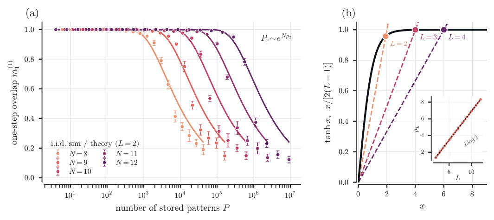
<figcaption class="paper-figure-caption"><b>Fig 1.</b> Figure 1: Exponential storage capacity. (a) One-step overlap m(1) 1 versus the number of stored patterns P for the i.i.d. ensemble at width L = 2 and layer sizes N = 8, 9, 10, 11, 12: solid lines are the closed form (32), markers Monte-Carlo (mean ± std over disorder realisations). The degradation transition tracks Pc ∼eNρ2 and shifts right with N; because the capacity is exponential in N, only small N brings it into an accessible window. (b) Graphical solution of the symmetric saddle tanh x∗= x∗/[2(L −1)]: the non-trivial crossing x∗(markers) drifts towards 2(L −1) as the network widens. Inset: the noise rate ρL = L[(L −1) −ϕL(x∗)] against the width L, compared to L log 2 (dotted).</figcaption>
</figure>
<figure class="paper-figure-card">
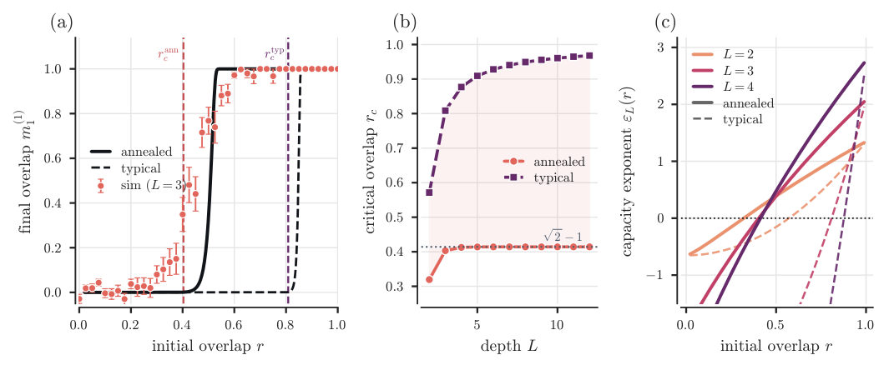
<figcaption class="paper-figure-caption"><b>Fig 2.</b> Figure 2: Basins of attraction: larger basins cost rate. (a) Basin recovery at L = 3 (N = 30, P = 3.5 × 104, i.i.d. ensemble): one-step overlap after the dynamics versus the cue overlap r, against the corrupted-cue prediction (40) built on the annealed signal µ1(r) (solid) and on the typical signal (dashed). The measured transition sits on the annealed curve, at r ≈0.47 next to rann c , and nowhere near the typical threshold rtyp c = 0.81: the annealed branch is the physical one. If anything the data overshoot the annealed curve toward larger basins, the annealed per-pattern noise being a conservative overestimate (Remark 2). The number of stored patterns is set from the annealed rule P =...</figcaption>
</figure>
<figure class="paper-figure-card">
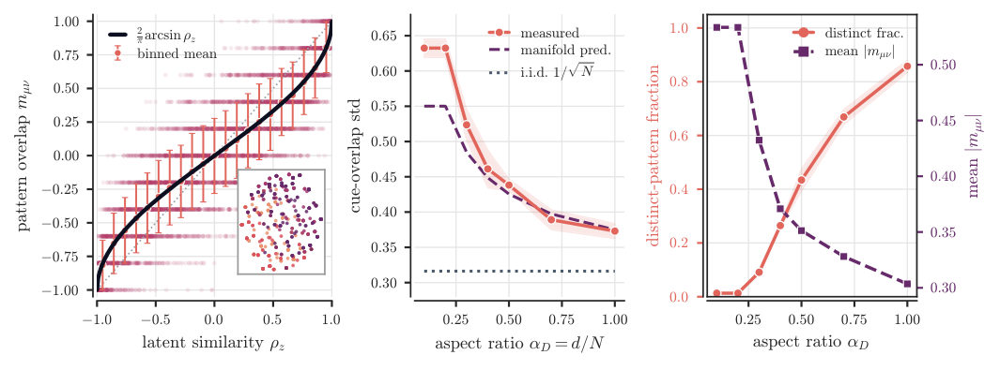
<figcaption class="paper-figure-caption"><b>Fig 3.</b> Figure 3: The data manifold. (a) Pattern overlap mµν against latent similarity ρz (density) with binned means (markers) lying on the arcsine law 2</figcaption>
</figure>
<figure class="paper-figure-card">
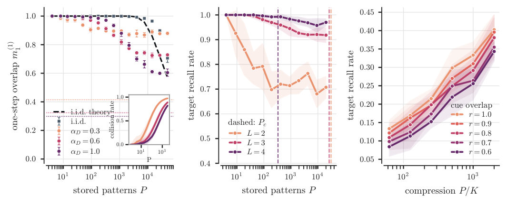
<figcaption class="paper-figure-caption"><b>Fig 4.</b> Figure 4: Capacity, width and surjective compression. (a) One-step overlap versus load P (N = 10) for the i.i.d. ensemble and Hidden-Manifold ensembles at several αD: capacity falls as the manifold shrinks, and past capacity the manifold state relaxes onto its structural floor (dotted) rather than a spurious pattern. Inset, same abscissa and colours: the collision rate (P −Punique)/P, the fraction of drawn latents that land on a pattern already stored. It leaves zero at a load of the order of Cover’s count C(N, D), earliest for the smallest αD, and the onset of each curve’s rise coincides with the onset of the corresponding overlap plateau. (b) Target-recall rate versus P for width L = 2,...</figcaption>
</figure>
<figure class="paper-figure-card">
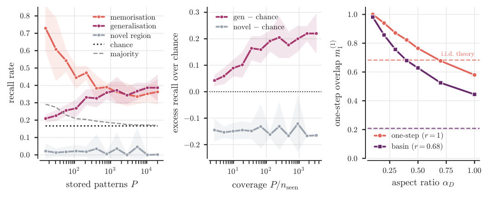
<figcaption class="paper-figure-caption"><b>Fig 5.</b> Figure 5: Memorisation without generalisation. (a) Memorisation, generalisation and novel-region recall versus load (K = 8 regions, two held out), with chance (dotted) and majority (dashed). (b) Excess over chance versus coverage P/nseen: generalisation grows and stays well above the novel-region control, which never leaves chance: the signal is real but far below memorisation. (c) As αD →1 the manifold retrieval descends onto the i.i.d. theory (dashed lines); at small αD collisions inflate the apparent overlap above it.</figcaption>
</figure>
</div>

<p><strong>Summary.</strong> This paper develops a theory for multilayer hetero-associative neural networks capable of storing exponentially many associations. By analyzing the network's energy landscape using advanced statistical methods, the authors derive an exponential capacity bound. The results are validated across diverse datasets, suggesting that the underlying geometric encoding principle is domain-universal.</p>
<p><strong>Why it may be interesting.</strong> While focused on classical ML models, the analysis of complex energy landscapes, phase transitions (fixed points), and information storage capacity shares mathematical parallels with understanding order parameters in quantum spin glasses or disordered quantum systems.</p>
<details>
<summary>Detailed structure</summary>
<p><strong>Main problem.</strong> To model and analyze hetero-associative memory networks that exhibit exponential storage capacity, moving beyond auto-associative models.</p>
<p><strong>Main result.</strong> The network achieves an exponential storage capacity ($P_c \sim e^{N
ho_L}$) for mapping a cue to a distinct target, demonstrating domain-universal principles applicable from biology to language.</p>
<p><strong>Method.</strong> Analysis uses cavity/signal-to-noise techniques and large-deviation evaluations of noise, extending methods from classical Hopfield networks.</p>
<p><strong>Model / system.</strong> The system is an exponential neural network with L layers of N binary neurons, whose energy minimizes when every layer retrieves the same pattern index (hetero-associative state).</p>
<p><strong>Key observables.</strong> Storage Capacity ($P_c$), Rate ($
ho_L$), Generalization Error.</p>
<p><strong>Important parameters / regimes.</strong> Number of layers (L), Number of neurons (N), Number of stored patterns (P).</p>
<p><strong>Assumptions / limitations.</strong> The association must be a surjective function of the cue; generalization remains below memorization capacity, suggesting distinct capabilities.</p>
<p><strong>Figures summary.</strong> The notes detail comparisons across various data types (Hidden Manifold, T-cell receptors, Language Intent) showing consistent performance metrics for capacity and basins.</p>
<p><strong>Paper structure.</strong> The paper progresses from defining the hetero-associative model to deriving theoretical bounds on capacity using advanced statistical physics techniques, followed by extensive validation against structured biological and linguistic datasets.</p>
</details>
<details>
<summary>Abstract</summary>
<p>Exponential Hopfield networks store a number of patterns that grows exponentially with the number of neurons, and in their classical formulation they are auto-associative: they complete a corrupted copy of a memory into the memory itself. Many of the tasks one wants such a network to perform are instead hetero-associative, mapping a cue to a different target. We introduce and analyse an exponential neural network of $L$ layers of $N$ binary neurons, each layer carrying its own dataset, whose energy is an exponential of the product of the per-layer Mattis overlaps, so that it is minimised precisely when every layer retrieves the pattern of the same index; the stored association must be a surjective function of the cue, and we show why nothing else can be stored at all. A cavity/signal-to-noise analysis, made exact at leading order by a large-deviation evaluation of the noise, shows that the aligned hetero-associative state is a fixed point of the zero-temperature dynamics up to a number of stored patterns $P_c\sim e^{Nρ_L}$, exponential in the layer size, with an explicit rate $ρ_L$ that grows like $L\log 2$; enlarging the basins of attraction lowers the rate but never destroys its exponential character. Comparing the theory with structured data we find that the exponential capacity and the predicted basins survive correlated, many-to-one patterns: the network is a near-perfect content-addressable memory. The same closed forms describe, without refitting, a synthetic manifold, real T-cell-receptor/epitope triples and natural-language intent data, so the mechanism is domain-universal. Generalisation to unseen cues, though significantly above chance, stays below memorisation, and it is the geometry of the encoding, rather than the data domain, that sets how far above chance it reaches. In this family, exponential storage and strong generalisation are distinct capabilities.</p>
</details>
<p><sub><a href="#top">↑ back to top</a></sub></p>

<p><a id="paper-2607.29015"></a></p>
<h3 id="charge-discreteness-and-the-energy-efficiency-of-information-erasure-in-dynamic-random-access-memory-cells"><a href="http://arxiv.org/abs/2607.29015v1">Charge discreteness and the energy efficiency of information erasure in dynamic random-access memory cells</a></h3>
<p><strong>Authors:</strong> Takase Shimizu, Kouki Yamamoto, Kensaku Chida, Gento Yamahata, Katsuhiko Nishiguchi<br>
<strong>Type:</strong> theory · <strong>Category:</strong> statistical mechanics · <strong>PDF:</strong> <a href="https://arxiv.org/pdf/2607.29015v1">https://arxiv.org/pdf/2607.29015v1</a><br>
<strong>Analysis basis:</strong> full PDF text, analyzed in chunks
<strong>Topic relevance:</strong> <code>Keldysh / 2PI / non-Gaussian methods</code> <strong>2/5</strong> · <code>non-equilibrium dynamics</code> <strong>2/5</strong> · <code>correlated / nonlocal dissipation</code> <strong>1/5</strong> · <code>driven-dissipative phase transition</code> <strong>1/5</strong> · <code>entanglement &amp; information structure</code> <strong>1/5</strong> · <code>methods for driven-dissipative</code> <strong>1/5</strong> · <code>non-equilibrium universality</code> <strong>1/5</strong></p>
<div class="figure-strip-hint">↔ Scroll figures horizontally</div>
<div class="paper-figures-scroll">
<figure class="paper-figure-card">
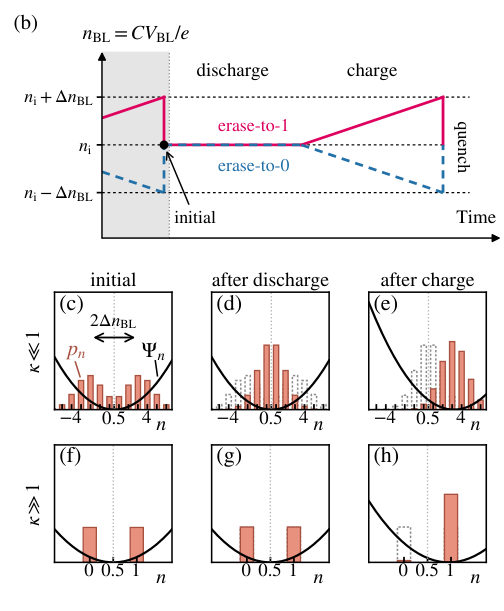
<figcaption class="paper-figure-caption"><b>Fig 1.</b> FIG. 1. Erasure of a DRAM cell and the effect of charge discreteness. (a) Equivalent circuit: a storage capacitor (SC, capacitance C) connected to a bitline (BL, VBL) through a wordline transistor (WT, VWT); the logical state is deter- mined by the excess number of electrons n. (b) Bitline-voltage sequences of the erase-to-1 (red) and erase-to-0 (blue dashed) operations: after discharge at ni = 0.5, nBL is swept qua- sistatically to ni + ∆nBL or ni −∆nBL, respectively, and is then quenched back to ni. The shaded region shows the end of the preceding cycle, whose quench prepares the initial state (marker) from which the discharge step begins. (c)– (h) Distribution pn (bars) and state...</figcaption>
</figure>
<figure class="paper-figure-card">
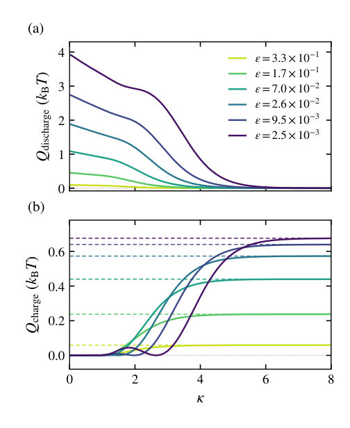
<figcaption class="paper-figure-caption"><b>Fig 2.</b> FIG. 2. Calculated heat dissipation in the two steps of the erasure protocol versus κ, for various values of the erasure error probability ε. (a) Discharge step, Eq. (7). Qdischarge decreases monotonically and vanishes for κ ≫1. (b) Charge step, Eq. (8). Qcharge increases with κ and saturates at the Landauer cost kBT[ln 2 −H(ε)], indicated by the dashed hor- izontal line of the corresponding color for each ε; horizontal dotted lines indicate Q = 0.</figcaption>
</figure>
<figure class="paper-figure-card">
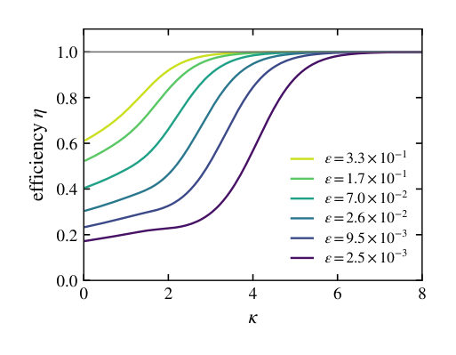
<figcaption class="paper-figure-caption"><b>Fig 3.</b> FIG. 4. Energy efficiency η, Eq. (9), versus κ at fixed error probabilities ε. The efficiency increases monotonically with κ and approaches the Landauer limit η = 1 (gray line) for κ ≫1.</figcaption>
</figure>
<figure class="paper-figure-card">
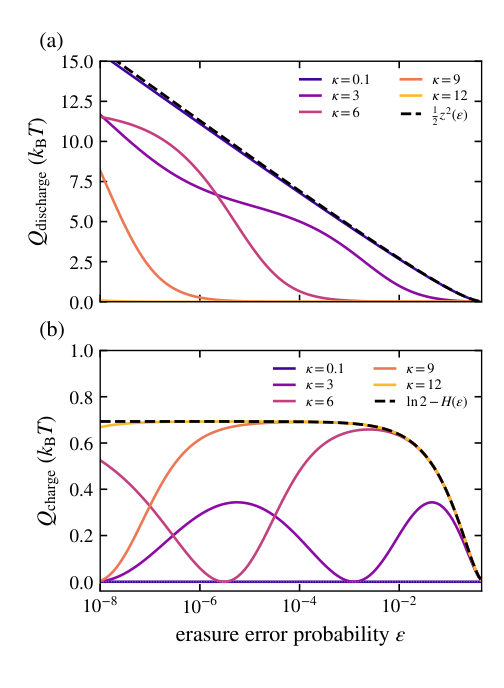
<figcaption class="paper-figure-caption"><b>Fig 4.</b> FIG. 3. Heat dissipation versus erasure error probability ε, from the exact evaluation of Eqs. (7) and (8). (a) Qdischarge for several values of κ; the dashed curve is the continuum-limit expression 1</figcaption>
</figure>
<figure class="paper-figure-card">
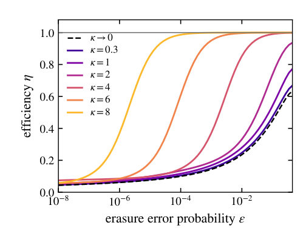
<figcaption class="paper-figure-caption"><b>Fig 5.</b> FIG. 5. Energy efficiency η versus error probability ε for several κ. The black dashed curve shows the continuum-limit expression of Eq. (12). At fixed κ, η increases with ε; as κ grows the curves rise toward the Landauer limit η = 1 (gray line).</figcaption>
</figure>
</div>

<p><strong>Summary.</strong> This paper analyzes the energy cost of erasing stored information in DRAM cells by considering charge discreteness via the parameter $\kappa$. Using stochastic thermodynamics, the authors show that increasing $\kappa$ suppresses non-equilibrium heat loss during erasure. Consequently, the energy efficiency rises toward the theoretical Landauer limit, establishing $\kappa$ as the key control parameter for memory circuit efficiency.</p>
<p><strong>Why it may be interesting.</strong> This work provides a concrete thermodynamic link between device physics (charge discreteness) and fundamental information limits (Landauer's principle), which is relevant for understanding energy dissipation in nanoscale quantum devices.</p>
<details>
<summary>Detailed structure</summary>
<p><strong>Main problem.</strong> The study investigates how charge discreteness affects the energy efficiency of information erasure processes within Dynamic Random-Access Memory (DRAM) cells.</p>
<p><strong>Main result.</strong> Energy efficiency increases monotonically with the charging energy to thermal energy ratio ($\kappa$), approaching the Landauer limit when $\kappa$ is large, indicating that $\kappa$ controls the fundamental efficiency ceiling.</p>
<p><strong>Method.</strong> The authors employ a stochastic-thermodynamic model to calculate heat dissipation and energy efficiency across different regimes of the parameter $\kappa$.</p>
<p><strong>Model / system.</strong> The system modeled is a DRAM cell whose information storage relies on an integer number of electrons ($n$) on a capacitor. The physics is governed by the competition between charging energy ($E_c$) and thermal fluctuations, quantified by $\kappa = E_c / k_B T$.</p>
<p><strong>Key observables.</strong> Energy efficiency ($\eta$), heat released during discharge ($Q_{	ext{discharge}}$), and heat released during charge ($Q_{	ext{charge}}$).</p>
<p><strong>Important parameters / regimes.</strong> The dimensionless parameter $\kappa$, the erasure error probability ($\epsilon$), and the Landauer limit.</p>
<p><strong>Assumptions / limitations.</strong> The analysis uses a stochastic-thermodynamic framework, employing continuum approximations (Gaussian fits) in certain regimes to simplify calculations for $Q_{	ext{discharge}}$.</p>
<p><strong>Figures summary.</strong> Figures illustrate how discharge heat decreases with increasing $\kappa$, while charge heat increases and saturates at the Landauer cost. Energy efficiency ($\eta$) is shown to increase monotonically towards unity as $\kappa$ grows.</p>
<p><strong>Paper structure.</strong> The paper develops the theory by analyzing the energy costs of erasure in different regimes defined by $\kappa$. It shows that increasing $\kappa$ suppresses non-quasistatic discharge heat while driving the quasistatic charge heat toward the Landauer limit, thereby boosting overall efficiency.</p>
</details>
<details>
<summary>Abstract</summary>
<p>A dynamic random-access memory (DRAM) cell stores information as an integer number of electrons on a capacitor, and whether this discreteness is thermodynamically relevant depends on the competition between the charging energy and thermal fluctuations. This competition is quantified by the ratio $κ$ of the single-electron charging energy to the thermal energy, and here we investigate how $κ$ affects the energy efficiency of information erasure in a DRAM cell. Using a stochastic-thermodynamic model of a DRAM cell, we show that the nonquasistatic heat released during the discharge step is suppressed as $κ$ increases, whereas the quasistatic heat of the charge step approaches the Landauer cost. As a result, the energy efficiency increases monotonically with $κ$ and approaches the Landauer limit where the effect of charge discreteness is maximal and the cell is effectively reduced to two charge states. The parameter $κ$ thus connects two thermodynamic regimes: a multilevel single-well memory, whose nonequilibrium initial state prevents quasistatic erasure, and an effective two-level memory that can attain the Landauer limit. These results identify $κ$ as the parameter that controls the fundamental efficiency ceiling of transistor--capacitor memory circuits.</p>
</details>
<p><sub><a href="#top">↑ back to top</a></sub></p>

<p><a id="paper-2607.29099"></a></p>
<h3 id="a-low-temperature-ultra-high-vacuum-scanning-probe-microscope-with-in-situ-electronic-transport-capabilities-from-macro-to-nano-in-10-minutes"><a href="http://arxiv.org/abs/2607.29099v1">A low-temperature ultra-high-vacuum scanning probe microscope with in situ electronic transport capabilities: from macro to nano in 10 minutes</a></h3>
<p><strong>Authors:</strong> Diego Exposito, Oscar Custance, Ivan Brihuega<br>
<strong>Type:</strong> experiment · <strong>Category:</strong> other · <strong>PDF:</strong> <a href="https://arxiv.org/pdf/2607.29099v1">https://arxiv.org/pdf/2607.29099v1</a><br>
<strong>Analysis basis:</strong> full PDF text, analyzed in chunks
<strong>Topic relevance:</strong> <code>Kondo &amp; dissipative impurity</code> <strong>2/5</strong> · <code>QC/QI experiment</code> <strong>2/5</strong> · <code>analog quantum simulation</code> <strong>1/5</strong> · <code>methods for driven-dissipative</code> <strong>1/5</strong> · <code>non-equilibrium dynamics</code> <strong>1/5</strong> · <code>spintronics-quantum-optics interface</code> <strong>1/5</strong></p>
<div class="figure-strip-hint">↔ Scroll figures horizontally</div>
<div class="paper-figures-scroll">
<figure class="paper-figure-card">
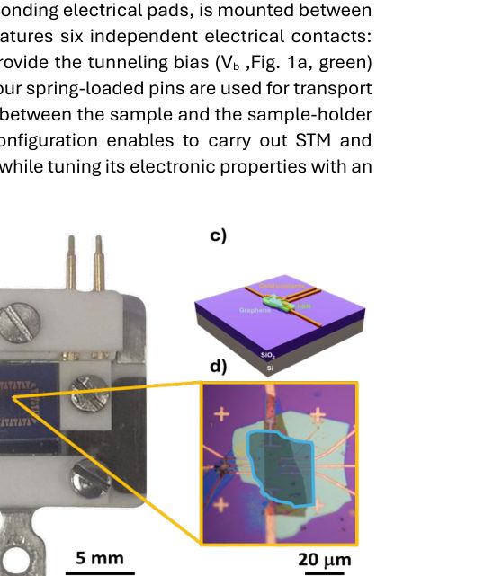
<figcaption class="paper-figure-caption"><b>Fig 1.</b> FIG. 1. a) 3D model of a modded flag-style sampleholder specifically designed to simultaneously perform STM and transport measurements. It has six independent electrical contacts: tunneling bias voltage (green), gate voltage (red) and four probe transport connections (blue). b) Picture of the actual sample holder modelled in a). c) 3D representation of a graphene device consisting of a MLG (blue) con top on an hBN (green) deposited on a doped SiO2/Si chip. Gold contacts are deposited on</figcaption>
</figure>
<figure class="paper-figure-card">

<figcaption class="paper-figure-caption"><b>Fig 2.</b> FIG.2. Full LT-UHV experimental system. a) Original 3D design. b) Actual picture of the setup.</figcaption>
</figure>
<figure class="paper-figure-card">
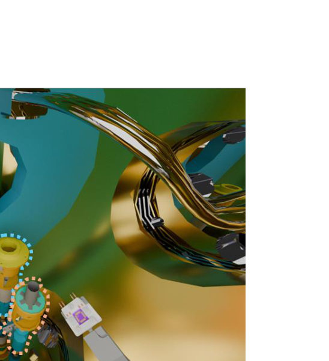
<figcaption class="paper-figure-caption"><b>Fig 3.</b> FIG. 3. 3D design of the preparation chamber interior. Among other components, it includes a heater (orange contour), a metal evaporator (blue contour) and a hydrogen cracker (pink contour).</figcaption>
</figure>
<figure class="paper-figure-card">
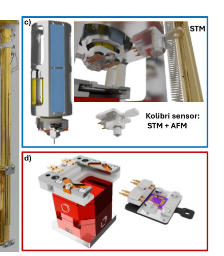
<figcaption class="paper-figure-caption"><b>Fig 4.</b> FIG. 4. Microscope mounted on gold-plated OFHC copper base. a) 3D design. b) Picture of the actual microscope. c) 3D design of the tip stage showing a STM tip exchanging and a mounted KolibriSensor below. d) 3D design of the sample stage showing the sample exchanging.</figcaption>
</figure>
<figure class="paper-figure-card">
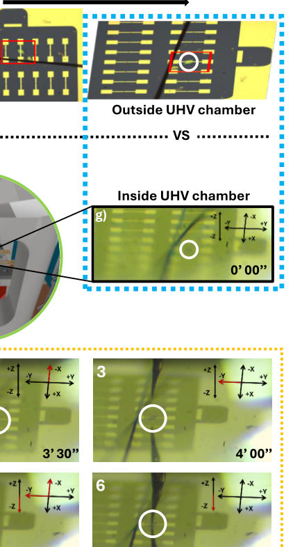
<figcaption class="paper-figure-caption"><b>Fig 5.</b> FIG. 5. Comparison of external (a-d) and in-situ (e-g) optical characterization, device locating and landing procedure (1-6). Top: a) Image of the sample holder with the mounted sample. b) Optical image of the graphene device with labels. c) External optical microscope image of the device and its surroundings. Same as c) but rotated to fit the angled view obtained with the optical telescope. Middle: e) Optical telescope29–31,33 attached to the STM chamber (yellow contour) and camera35 used for sample transfer (red contour). They are mounted on a homemade XY stage to easily target the sample’s position. f) 3D representation of the 25º tilted line of sight obtained with the optical telescope...</figcaption>
</figure>
</div>

<p><strong>Summary.</strong> This paper details the development of a sophisticated low-temperature, ultra-high-vacuum scanning probe microscope that uniquely combines atomic-scale imaging (STM) with macroscopic electrical transport measurements. This integrated platform allows researchers to correlate local structural changes or controlled material depositions directly with device performance metrics like resistivity and superconducting critical currents in 2D materials.</p>
<p><strong>Why it may be interesting.</strong> While focused on solid-state devices, the ability to precisely control surface chemistry <em>in situ</em> while monitoring quantum transport properties is highly relevant for studying emergent phenomena in engineered quantum materials.</p>
<details>
<summary>Detailed structure</summary>
<p><strong>Main problem.</strong> The primary goal is to establish a single, integrated platform that allows for direct correlation between local atomic-scale structural/spectroscopic measurements and global electronic transport behavior in two-dimensional (2D) devices.</p>
<p><strong>Main result.</strong> The authors developed a versatile low-temperature, ultra-high-vacuum system capable of performing simultaneous STM imaging and 4-probe electrical transport characterization on the same sample.</p>
<p><strong>Method.</strong> The setup integrates multiple techniques—SPM, UHV preparation tools (evaporator, cracker), and cryogenics—to allow <em>in situ</em> modification and measurement across wide temperature ranges.</p>
<p><strong>Model / system.</strong> The platform is a specialized LT-UHV scanning probe microscope featuring two interconnected chambers. It supports measuring superconducting gaps via STS on materials like graphene and tracking the temperature dependence of resistivity/critical current in patterned nanowires (e.g., Pb).</p>
<p><strong>Key observables.</strong> Local structural signatures (STM topography), spectroscopic features (superconducting gap $\Delta$), global electrical transport properties ($
ho(T)$, $I_c(T)$).</p>
<p><strong>Important parameters / regimes.</strong> Temperature range: 2.9 K to 400 K; Mechanical stability: $<1$ pm; Spatial resolution: $5\ \mu	ext{m}$ landing accuracy in 10 minutes.</p>
<p><strong>Assumptions / limitations.</strong> The system's complexity requires overcoming technical challenges related to integrating diverse capabilities (UHV, LT, SPM, transport) into one stable platform.</p>
<p><strong>Figures summary.</strong> Figures illustrate the complex UHV chamber design, the custom sample holder with six contacts for simultaneous measurement, and results showing superconducting transitions ($
ho(T)$ dropping to zero) in Pb nanowires.</p>
<p><strong>Paper structure.</strong> The paper describes the necessity of correlating local and global properties, details the engineering solution (the LT-UHV platform), demonstrates its capabilities through material preparation and precise positioning, and validates performance using measurements on graphene and superconducting nanowires.</p>
</details>
<details>
<summary>Abstract</summary>
<p>We have developed a low temperature (LT), ultra-high-vacuum (UHV) system that combines two complementary techniques, scanning probe microscopy (SPM) and electrical transport measurements, within a single platform. By providing simultaneous access to the atomic-scale surface landscape and the macroscopic device response of the same sample, the setup enables direct correlations between local structural/spectroscopic signatures and global electronic transport behavior in two-dimensional (2D) devices. The system allows experiments where atomic-scale modifications or controlled manipulations are performed while continuously monitoring their impact on device-scale performance. The setup consists of two interconnected UHV chambers: a dedicated preparation chamber and a separate measurement chamber that houses a liquid-helium cryostat and the SPM/transport stage. Base pressure is 1x10^-11 Torr. A key feature is direct optical access to the sample, enabling rapid and reliable tip positioning with an accuracy of 5 microns x 5 microns within 10 minutes. The SPM, operated using custom-built electronics, can track the exact same sample region across a temperature range from 2.9 K to 400 K, with mechanical stability below 1 pm. System performance is demonstrated on graphene devices, and bulk Pb is used to determine energy resolution. Using superconducting tips, scanning tunneling spectroscopy measures the superconducting gap with an energy resolution of 30 microV. Transport measurements track the temperature dependence of both resistivity and critical current across the superconducting transition of an in-situ prepared Pb nanowire.</p>
</details>
<p><sub><a href="#top">↑ back to top</a></sub></p>

<p><a id="paper-2607.29050"></a></p>
<h3 id="finite-size-reliability-of-homothetic-quantum-otto-engines"><a href="http://arxiv.org/abs/2607.29050v1">Finite-size reliability of homothetic quantum Otto engines</a></h3>
<p><strong>Authors:</strong> Gabriella G. Damas, Clebson Cruz, Norton G. de Almeida, Gao Xianlong, G. D. de Moraes Neto<br>
<strong>Type:</strong> theory · <strong>Category:</strong> statistical mechanics · <strong>PDF:</strong> <a href="https://arxiv.org/pdf/2607.29050v1">https://arxiv.org/pdf/2607.29050v1</a><br>
<strong>Analysis basis:</strong> full PDF text, analyzed in chunks
<strong>Topic relevance:</strong> <code>non-equilibrium dynamics</code> <strong>2/5</strong> · <code>correlated / nonlocal dissipation</code> <strong>1/5</strong> · <code>driven-dissipative phase transition</code> <strong>1/5</strong> · <code>methods for driven-dissipative</code> <strong>1/5</strong> · <code>non-equilibrium universality</code> <strong>1/5</strong> · <code>quantum measurements</code> <strong>1/5</strong></p>
<div class="figure-strip-hint">↔ Scroll figures horizontally</div>
<div class="paper-figures-scroll">
<figure class="paper-figure-card">
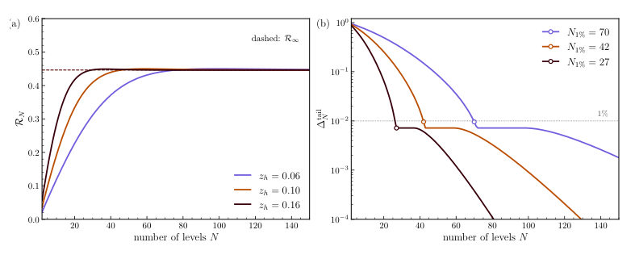
<figcaption class="paper-figure-caption"><b>Fig 1.</b> FIG. 1. Finite-N crossover of the work reliability RN for a uniformly spaced homothetic ladder. (a) Exact finite-N reliability as a function of the ladder dimension N for three values of zh; dashed horizontal lines denote the corresponding oscillator limits R∞. (b) Tail distance ∆tail N = maxM≥N |RM −R∞|/R∞. The dotted line marks the 1% tolerance, and the open markers identify the smallest dimension N1% after which the finite ladder remains within this tolerance. The ratio of scaled gaps is fixed at r = zl/zh = 2.0.</figcaption>
</figure>
<figure class="paper-figure-card">
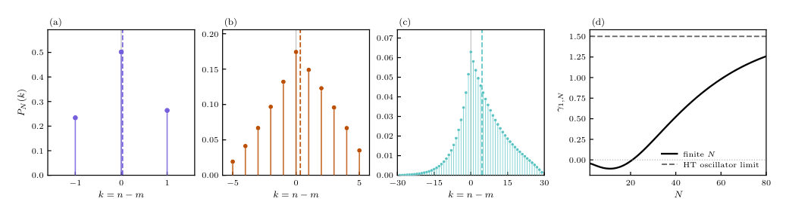
<figcaption class="paper-figure-caption"><b>Fig 2.</b> FIG. 2. Non-Gaussian finite-size structure of the TPM work distribution for a uniform homothetic ladder with zh = 0.08 and zl = 0.20. Panels (a)–(c) show the distribution of the dimensionless work index k = W/[(1 −α)ϵ] = n −m for N = 2, N = 6, and N = 30, respectively. Dashed vertical lines mark ⟨k⟩N. Panel (d) shows the normalized skewness γ1,N from Eq. (27); the dashed horizontal line gives the oscillator high-temperature limit in Eq. (28). Finite spectral support changes both the width and the non-Gaussian tail structure of the work distribution.</figcaption>
</figure>
<figure class="paper-figure-card">
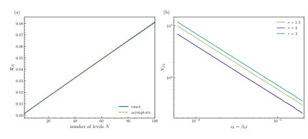
<figcaption class="paper-figure-caption"><b>Fig 3.</b> FIG. 3. Finite-N scaling and saturation toward oscillator reliability. (a) Exact work reliability RN compared with the near-uniform expansion Rasy N = (zl −zh) p</figcaption>
</figure>
<figure class="paper-figure-card">
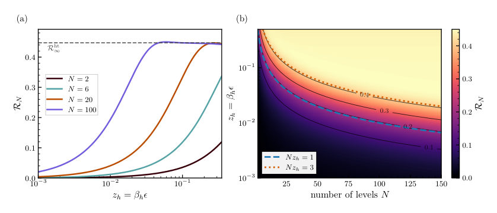
<figcaption class="paper-figure-caption"><b>Fig 4.</b> FIG. 4. Noncommuting high-temperature and infinite-dimensional limits of work reliability. (a) RN versus zh = βhϵ at fixed ratio r = zl/zh = 2. For each finite N, RN →0 as zh →0, whereas the oscillator-first limit gives the plateau Rht ∞= (r −1)/ √</figcaption>
</figure>
<figure class="paper-figure-card">
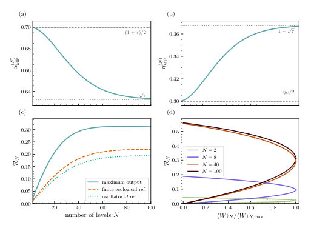
<figcaption class="paper-figure-caption"><b>Fig 5.</b> FIG. 5. Mean-output optimization and work reliabil- ity for a finite uniform ladder at τ = Tl/Th = 0.4 and zh = 0.08. (a) Maximum-output compression ratio α(N) MP ob- tained from Eq. (62). Horizontal reference lines show the finite-N high-temperature value (1 + τ)/2 and the oscillator high-temperature value √τ. (b) Efficiency at the same oper- ating point, η(N) MP = 1−α(N) MP, compared with ηC/2 and 1−√τ. (c) Work reliability RN evaluated at the finite-N maximum- output point and at two external reference prescriptions: the finite high-temperature ecological point and the oscillator Ω point. (d) Output–reliability sweep obtained by varying α at fixed N. The horizontal axis shows the...</figcaption>
</figure>
</div>

<p><strong>Summary.</strong> This paper develops a detailed theoretical framework to analyze the reliability of work extraction from quantum Otto engines operating with spectrally constrained (homothetic) systems. By deriving exact formulas for work distributions and moments in the finite-size limit, it quantifies how deviations from ideal conditions—such as incomplete thermalization or spectral distortion—affect performance metrics like mean output versus statistical reliability.</p>
<p><strong>Why it may be interesting.</strong> This work provides a rigorous diagnostic tool to quantify non-ideal effects—like finite size or incomplete thermalization—in quantum energy conversion devices, which is crucial for designing practical quantum heat engines.</p>
<details>
<summary>Detailed structure</summary>
<p><strong>Main problem.</strong> The paper investigates the finite-size reliability of work extraction from quantum heat engines, focusing on how fluctuations affect performance when energy spectra are discrete and finite.</p>
<p><strong>Main result.</strong> It derives explicit formulas for the full work distribution and its moments for specific spectral structures, demonstrating that high-temperature/infinite-dimensional limits do not commute with finite-size effects.</p>
<p><strong>Method.</strong> The analysis utilizes the Two-Point-Measurement (TPM) construction to calculate work statistics, specializing on homothetic spectra and extending the framework to include incomplete thermalization and finite driving times.</p>
<p><strong>Model / system.</strong> The model is a quantum Otto engine operating with 'homothetic' energy gaps, meaning all populated energy gaps are rescaled by a common factor. The system can be specialized to a uniformly spaced ladder connecting qubit and oscillator limits.</p>
<p><strong>Key observables.</strong> Work distribution, mean work ($\langle W 
angle$), variance ($\sigma^2_W$), and signal-to-width reliability ($R_N$).</p>
<p><strong>Important parameters / regimes.</strong> Finite number of energy levels ($N$), the scaling factor $\alpha$, temperature parameters ($eta_h, eta_l$), and spectral distortion measures.</p>
<p><strong>Assumptions / limitations.</strong> The primary assumption is that work statistics can be accurately derived using the Two-Point-Measurement (TPM) construction for energy-diagonal endpoint states; it also assumes quasistatic operation in the adiabatic limit.</p>
<p><strong>Figures summary.</strong> Figure 1 illustrates the finite-$N$ crossover of reliability ($R_N$) for a uniform ladder, comparing exact results to infinite limits. Other figures compare mean work and reliability under sudden switches versus adiabatic driving.</p>
<p><strong>Paper structure.</strong> The paper establishes the theoretical framework using homothetic engines, derives moment equations via TPM, specializes these derivations for the uniformly spaced ladder case, compares different operational regimes (e.g., harmonic oscillator vs. ad-hoc), and finally analyzes deviations from ideal homothety.</p>
</details>
<details>
<summary>Abstract</summary>
<p>Homothetic quantum Otto engines---where all populated energy gaps are rescaled by a common factor---provide a reference model in which the quasistatic stochastic efficiency is trajectory-independent while work remains fluctuating. For arbitrary finite homothetic spectra we derive the two-point-measurement work distribution and reduce the first two work moments to endpoint energy moments. Specializing to a uniformly spaced ladder gives closed finite-$N$ expressions for the full work distribution, mean work, variance, and signal-to-width reliability. This ladder connects the qubit and oscillator limits, reveals a finite-$N$ reliability crossover, and demonstrates that the high-temperature and infinite-dimensional limits do not commute. The noncommutation reflects a bounded-versus-unbounded spectral distinction: at fixed finite $N$ the Gibbs state has a normalizable infinite-temperature limit, whereas the oscillator retains an ever-expanding thermal tail. The exact formulas are used to compare standard mean-output prescriptions with work reliability, showing that maximum mean output and maximum dimensionless reliability select different operating points. The benchmark is extended to incomplete diagonal reset and to finite-time unitary strokes described by transition matrices, with a finite-ladder protocol and a harmonic sudden-switch oscillator benchmark as controlled examples. Weak deviations from exact homothety are treated perturbatively, showing how level-dependent gap distortions reintroduce quasistatic efficiency fluctuations and modify work reliability. Together, these results separate finite-size, incomplete thermalization, finite-time, and weak spectral-distortion contributions to work unreliability in quantum Otto engines.</p>
</details>
<p><sub><a href="#top">↑ back to top</a></sub></p>

<p><a id="paper-2607.29599"></a></p>
<h3 id="superselectivity-as-a-receptor-fluctuation-response"><a href="http://arxiv.org/abs/2607.29599v1">Superselectivity as a Receptor-Fluctuation Response</a></h3>
<p><strong>Authors:</strong> Xiuyang Xia<br>
<strong>Type:</strong> theory · <strong>Category:</strong> statistical mechanics · <strong>PDF:</strong> <a href="https://arxiv.org/pdf/2607.29599v1">https://arxiv.org/pdf/2607.29599v1</a><br>
<strong>Analysis basis:</strong> full PDF text, analyzed in chunks
<strong>Topic relevance:</strong> <code>non-equilibrium dynamics</code> <strong>2/5</strong> · <code>Keldysh / 2PI / non-Gaussian methods</code> <strong>1/5</strong> · <code>correlated / nonlocal dissipation</code> <strong>1/5</strong> · <code>driven-dissipative phase transition</code> <strong>1/5</strong> · <code>methods for driven-dissipative</code> <strong>1/5</strong> · <code>non-equilibrium universality</code> <strong>1/5</strong></p>
<div class="figure-strip-hint">↔ Scroll figures horizontally</div>
<div class="paper-figures-scroll">
<figure class="paper-figure-card">
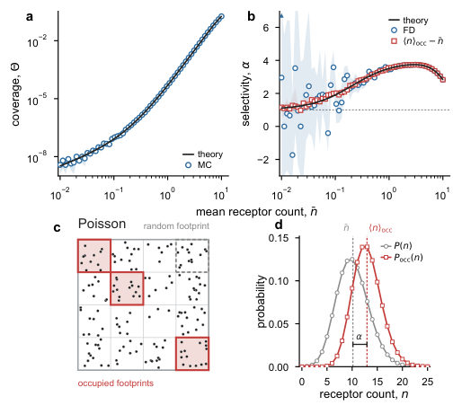
<figcaption class="paper-figure-caption"><b>Fig 1.</b> FIG. 1. Poisson receptor fluctuations and selectivity. Pan- els (a,b) compare coverage and selectivity from lattice-gas Monte Carlo (MC) simulations with exact theory. Panel (b) shows selectivity from finite differences (FD) and from the occupied-footprint receptor excess ⟨n⟩occ −¯n. Panels (c,d) show a Poisson receptor map and the corresponding random- and occupied-footprint count distributions at ¯n = 10.14. The separation between their mean counts equals α. The adsorp- tion parameters are κ = 4, s = e2, and z = 10−8. Shading denotes 95% intervals from complete-replica bootstrap resam- pling; boundary triangles mark zero lower bounds or confi- dence sets extending beyond the plotted range.</figcaption>
</figure>
<figure class="paper-figure-card">
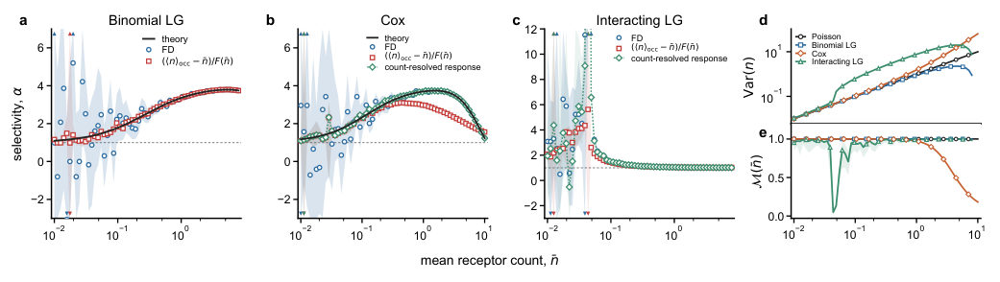
<figcaption class="paper-figure-caption"><b>Fig 2.</b> FIG. 2. Receptor statistics and selectivity. Panels (a–c) compare selectivity from finite differences (FD), the Fano-rescaled receptor excess, and the count-resolved response for finite-capacity binomial, frozen-intensity Cox, and attractive interacting receptor ensembles. Panels (d,e) show the corresponding receptor-count variance and linear count-mode weight M(¯n). The binomial ensemble has a footprint capacity M = 9. In the binary Cox ensemble, the local intensity multiplier X equals 0.4 with probability 0.6 and 1.9 otherwise. The interacting lattice gas uses a dimensionless nearest-neighbor attraction J = 3. The adsorption parameters are κ = 4, s = e2, and z = 10−8. Shaded regions...</figcaption>
</figure>
<figure class="paper-figure-card">
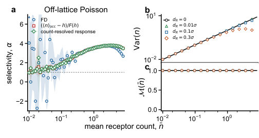
<figcaption class="paper-figure-caption"><b>Fig 3.</b> FIG. 3. Receptor exclusion and particle crowding. Panel (a) compares point-receptor selectivity from finite differences (FD), the Fano-rescaled receptor excess, and the count- resolved response. The receptor-based measurements overlap but separate from FD at high density because of guest-particle crowding. Panels (b,c) show the footprint-count variance and linear count-mode weight M(¯n) for dR/σ = 0, 0.01, 0.1, and 0.3. Here dR is the receptor hard-core diameter and σ is the guest-particle diameter. The adsorption parameters are κ = 4, s = e2, and z = 10−8. Shaded regions denote 95% complete-replica bootstrap intervals, and boundary triangles indicate intervals extending beyond the plotted...</figcaption>
</figure>
</div>

<p><strong>Summary.</strong> This work develops a theoretical framework to dissect superselectivity in multivalent binding by decomposing the macroscopic response into contributions from receptor state reweighting and local occupation changes. It shows that this selectivity is fundamentally governed by how particle adsorption samples local receptor density fluctuations, providing measurable estimators for various physical regimes.</p>
<p><strong>Why it may be interesting.</strong> It provides a rigorous fluctuation-response framework applicable to adsorption phenomena, which shares mathematical structures with open quantum systems where environmental fluctuations dictate system behavior.</p>
<details>
<summary>Detailed structure</summary>
<p><strong>Main problem.</strong> The paper aims to microscopically understand the origin of 'superselectivity'—the sharp density discrimination observed during multivalent binding—by decomposing its macroscopic logarithmic response.</p>
<p><strong>Main result.</strong> Superselectivity can be exactly decomposed into a receptor-state reweighting term and a direct occupation response, providing quantitative rules that link selectivity to local receptor fluctuations.</p>
<p><strong>Method.</strong> The authors derive exact theoretical decompositions for the selectivity ($\alpha$) in terms of ensemble averages over occupied vs. random receptor counts, comparing results across various statistical limits.</p>
<p><strong>Model / system.</strong> The system models multivalent particles adsorbing onto a surface with spatially fluctuating receptors, tested using lattice gas simulations and off-lattice hard-disk models.</p>
<p><strong>Key observables.</strong> Superselectivity ($\alpha$), local receptor excess ($\langle n 
angle_{	ext{occ}} - ar{n}$), Fano factor ($F(ar{n})$), and the linear count mode weight ($M(ar{n})$).</p>
<p><strong>Important parameters / regimes.</strong> Receptor statistics (Poisson, Binomial, Cox, Interacting LG), particle/receptor diameters ($d_R/\sigma$), and system density ($ar{n}$).</p>
<p><strong>Assumptions / limitations.</strong> The analysis relies on deriving exact response decompositions; approximations are made when moving beyond the Poisson limit or dealing with finite-size effects.</p>
<p><strong>Figures summary.</strong> Figures compare selectivity estimates (Finite Difference vs. Fano-rescaled vs. Count-resolved) across different receptor statistics and show how increasing receptor size ($d_R$) modifies these comparisons, especially at high coverage.</p>
<p><strong>Paper structure.</strong> The paper develops the general response decomposition theory, applies it to specific statistical ensembles (Poisson, Binomial, Cox), and then tests the robustness of the derived estimators using lattice/off-lattice simulations while analyzing finite size effects.</p>
</details>
<details>
<summary>Abstract</summary>
<p>Superselective multivalent binding enables sharp receptor-density discrimination in targeting and sensing, but what its logarithmic response measures microscopically remains unclear. Here, we derive an exact response decomposition of the selectivity into receptor-state reweighting and a direct occupation response. In the dilute quenched Poisson limit, the direct term vanishes and selectivity is exactly the mean receptor excess beneath bound particles, which can be measured at a single density from a sufficiently large co-registered receptor-particle image. Beyond Poisson statistics, the excess is normalized by the Fano factor for a linear count response, while changes in distribution shape require the full count-resolved response. Lattice simulations verify these relations across distinct receptor statistics, while off-lattice simulations show that particle crowding enters through the direct term. These results establish a fluctuation-response framework linking multivalent selectivity to the local receptor fluctuations preferentially sampled by adsorption.</p>
</details>
<p><sub><a href="#top">↑ back to top</a></sub></p>

<p><a id="paper-2607.28922"></a></p>
<h3 id="error-generator-level-compression-for-fast-quantum-gates"><a href="http://arxiv.org/abs/2607.28922v1">Error-Generator-Level Compression for Fast Quantum Gates</a></h3>
<p><strong>Authors:</strong> Razvan Stanescu, Hugo Ribeiro<br>
<strong>Type:</strong> theory · <strong>Category:</strong> quantum information and computing · <strong>PDF:</strong> <a href="https://arxiv.org/pdf/2607.28922v1">https://arxiv.org/pdf/2607.28922v1</a><br>
<strong>Analysis basis:</strong> full PDF text, analyzed in chunks
<strong>Topic relevance:</strong> <code>QC/QI experiment</code> <strong>2/5</strong> · <code>correlated / nonlocal dissipation</code> <strong>1/5</strong> · <code>driven-dissipative phase transition</code> <strong>1/5</strong> · <code>methods for driven-dissipative</code> <strong>1/5</strong> · <code>non-equilibrium dynamics</code> <strong>1/5</strong></p>
<div class="figure-strip-hint">↔ Scroll figures horizontally</div>
<div class="paper-figures-scroll">
<figure class="paper-figure-card">
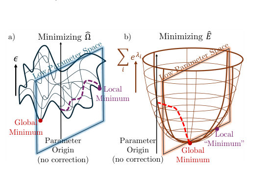
<figcaption class="paper-figure-caption"><b>Fig 1.</b> Figure 1. Schematic comparison between fidelity-based com- pression and generator-level compression. Minimizing a final- time unitary objective can favor nonperturbative solutions because the unitary is periodic in the residual eigenphases. In contrast, compressed Magnus control evaluates a spectral penalty that is convex in the Hermitian diagnostic genera- tor and is minimized when the projected residual eigenphases vanish; the induced landscape in pulse coefficients need not be convex.</figcaption>
</figure>
<figure class="paper-figure-card">
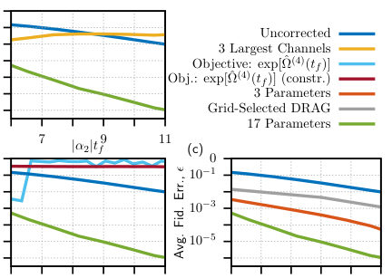
<figcaption class="paper-figure-caption"><b>Fig 2.</b> Figure 2. Average fidelity error ϵ versus dimensionless gate time |α2| tf for a target π/2 rotation about the x axis, com- puted from the projected final-time evolution of the four-level transmon model. (a) Naive three-parameter truncation re- taining only the largest error channels predicted by the fourth- order generator (yellow). (b) Three-parameter minimization of the truncated residual unitary exp[ˆΩ(4)] without (light blue) and with (red) partial Magnus constraints. (c) Three- parameter compressed Magnus correction obtained by mini- mizing Φ(4) (orange) and grid-optimized leading-order DRAG (gray), where the smallest error is selected independently at each gate time from the discrete...</figcaption>
</figure>
<figure class="paper-figure-card">
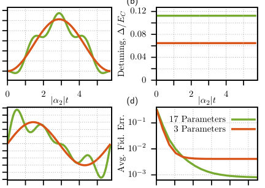
<figcaption class="paper-figure-caption"><b>Fig 3.</b> Figure 3. Modified pulses and finite-bandwidth perfor- mance at |α2| tf = 5.74. The three-parameter compressed pulse is obtained with ax/EC = −0.017, by/EC = 0.301, and ∆/EC = 0.065. Panels (a), (b), and (c) show the total modi- fied in-phase envelope fx,mod(t), constant detuning ∆, and to- tal modified quadrature envelope fy,mod(t), respectively, for the fully parameterized 17-parameter Magnus pulse (green) and the three-parameter compressed Magnus pulse (orange). In panel (d), a Gaussian response with 3 dB bandwidth ωBW is applied to the complete modified baseband envelopes, while the carrier frequency and detuning remain unchanged. The filtered amplitudes and pulse areas are not...</figcaption>
</figure>
</div>

<p><strong>Summary.</strong> The paper presents Error-Generator-Level Compression, a novel Magnus-based control method designed to suppress complex coherent errors in fast quantum gates using minimal control parameters. By minimizing a penalty functional derived from the projected error generator, it achieves superior gate fidelity compared to existing techniques like DRAG. This approach is particularly valuable for superconducting qubits as it maintains physical insight into error sources while simplifying pulse design.</p>
<p><strong>Why it may be interesting.</strong> This work provides a powerful, physically motivated control technique that directly targets the structure of coherent errors in superconducting qubits, offering an alternative to standard unitary optimization methods by focusing on the underlying error generators.</p>
<details>
<summary>Detailed structure</summary>
<p><strong>Main problem.</strong> The core problem is suppressing high-dimensional coherent error channels during fast quantum gate operations while ensuring the required control pulse remains simple to implement.</p>
<p><strong>Main result.</strong> A novel 'Error-Generator-Level Compression' technique using a Magnus-based principle successfully suppresses errors by orders of magnitude, achieving target fidelity faster than established methods like DRAG.</p>
<p><strong>Method.</strong> The authors introduce error-generator-level compression, which minimizes the projected error generator at a perturbative order while constraining the control waveform to only a few adjustable coefficients.</p>
<p><strong>Model / system.</strong> The study focuses on fast quantum gates implemented on transmon qubits, modeled by a driven Hamiltonian that includes terms for target evolution and coherent errors. The analysis uses a four-level truncation of the system dynamics.</p>
<p><strong>Key observables.</strong> Average fidelity error ($\epsilon$), projected error generator ($\hat{E}_{	ext{rel}}$), and residual eigenphases (diagnostics).</p>
<p><strong>Important parameters / regimes.</strong> The number of adjustable pulse parameters (e.g., three for the compressed pulse vs. 17 for full correction) and the gate time scale ($|\alpha_2| t_f$).</p>
<p><strong>Assumptions / limitations.</strong> The method does not make the truncated Magnus expansion exact; it selects a low-dimensional pulse by penalizing nonperturbatively large residual eigenphases.</p>
<p><strong>Figures summary.</strong> Figures compare error suppression and fidelity performance across different control methods (compressed vs. DRAG) and demonstrate that the compressed pulse is less sensitive to finite-bandwidth filtering than fully parameterized pulses.</p>
<p><strong>Paper structure.</strong> The paper introduces the problem of high-dimensional error suppression, details the Magnus-based compression principle by minimizing a spectral penalty on the projected error generator, rigorously relates this functional minimization to the average fidelity error, and finally tests the robustness against realistic finite-bandwidth filtering effects.</p>
</details>
<details>
<summary>Abstract</summary>
<p>Fast quantum gates in multilevel systems require suppressing many coherent-error channels using pulses that remain simple to implement. We introduce error-generator-level compression, a Magnus-based control principle that minimizes the complete projected error generator at a chosen perturbative order while restricting the implemented waveform to a few independently adjustable coefficients. This construction preserves all modeled computational and leakage errors rather than truncating the pulse by error channel, while its generator-level objective directly penalizes residual eigenphases that can signal departure from the perturbative regime. For fast transmon gates, a three-parameter pulse suppresses errors by orders of magnitude, outperforms grid-optimized leading- order DRAG over the gate-time range studied, and approaches a fully parameterized 17-parameter Magnus correction. The compressed pulse is also substantially less sensitive to the illustrative finite-bandwidth filtering model considered here.</p>
</details>
<p><sub><a href="#top">↑ back to top</a></sub></p>

<p><a id="paper-2607.29006"></a></p>
<h3 id="critical-phases-of-the-extended-isotropic-math640math-chain-with-four-spin-interaction"><a href="http://arxiv.org/abs/2607.29006v1">Critical Phases of the extended isotropic $XY$ chain with four-spin interaction</a></h3>
<p><strong>Authors:</strong> Nika Kurdadze, Giorgi Gogabedashvili, G. I. Japaridze<br>
<strong>Type:</strong> theory · <strong>Category:</strong> statistical mechanics · <strong>PDF:</strong> <a href="https://arxiv.org/pdf/2607.29006v1">https://arxiv.org/pdf/2607.29006v1</a><br>
<strong>Analysis basis:</strong> full PDF text, analyzed in chunks
<strong>Topic relevance:</strong> <code>analog quantum simulation</code> <strong>2/5</strong> · <code>driven-dissipative phase transition</code> <strong>1/5</strong> · <code>exotic spin models in light-matter</code> <strong>1/5</strong> · <code>non-equilibrium universality</code> <strong>1/5</strong></p>
<div class="figure-strip-hint">↔ Scroll figures horizontally</div>
<div class="paper-figures-scroll">
<figure class="paper-figure-card">
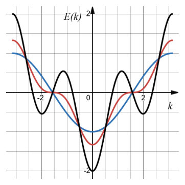
<figcaption class="paper-figure-caption"><b>Fig 1.</b> Figure 1: Dispersion relation for different positive values of the parameter α. The blue lines correspond to values of α below the Lifshitz transition, where the spectrum is characterized by two Fermi points. The red line corresponds to the spectrum at the critical point, α = αc = 4/3. The black line corresponds to the spectrum with six Fermi points.</figcaption>
</figure>
<figure class="paper-figure-card">
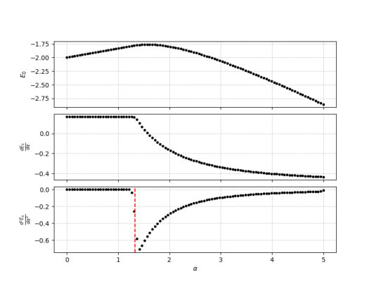
<figcaption class="paper-figure-caption"><b>Fig 2.</b> Figure 2: The ground state energy and its first and second derivatives as functions of the parameter α.</figcaption>
</figure>
<figure class="paper-figure-card">
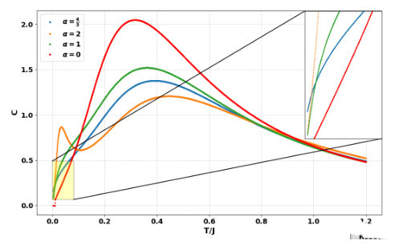
<figcaption class="paper-figure-caption"><b>Fig 3.</b> Figure 3: Heat capacity of the system as a function of temperature for α = 0 (blue line), α = 1 (green line), α = 2 (orange line), and at the QCP α = 4/3 (red line). The inset shows the low-temperature region 0 &lt; T/J &lt; 0.4, where the nonlinear behavior of the heat capacity at α = 4/3 and in the vicinity of the critical point (α = 1) is clearly seen.</figcaption>
</figure>
<figure class="paper-figure-card">
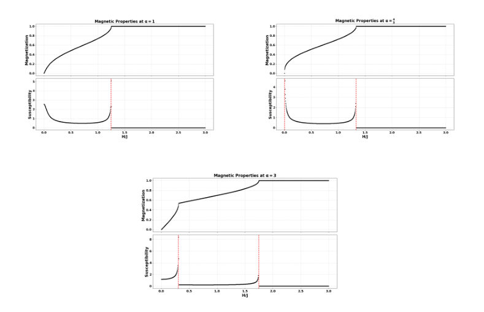
<figcaption class="paper-figure-caption"><b>Fig 4.</b> Figure 4: Magnetization and magnetic susceptibility as functions of the uniform magnetic field at α = 1 (a), α = 4/3 (b), and α = 3 (c).</figcaption>
</figure>
<figure class="paper-figure-card">
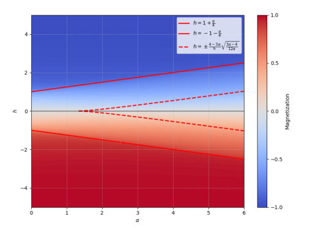
<figcaption class="paper-figure-caption"><b>Fig 5.</b> Figure 5: Magnetic phase diagram of the model as a function of the magnetic field and the parameter α. The solid lines h = ±(1 + α/4) mark transitions into the fully polarized ferromagnetic state, while the dashed lines</figcaption>
</figure>
</div>

<p><strong>Summary.</strong> This theoretical work analyzes the critical behavior of an extended XY spin chain with four-spin interactions by mapping it to a free fermion gas. It identifies Lifshitz-type topological quantum phase transitions characterized by band flattening at the critical point. This leads to unique, non-trivial power-law scaling for thermodynamic quantities like heat capacity and magnetic susceptibility near criticality.</p>
<p><strong>Why it may be interesting.</strong> The derivation of singular power-law scaling laws ($T^{-1/3}$, $H^{-5/6}$) from a topological phase transition in a quantum spin model provides deep insights into critical phenomena beyond mean-field theory, relevant for understanding exotic magnetic materials.</p>
<details>
<summary>Detailed structure</summary>
<p><strong>Main problem.</strong> The study investigates critical phases and quantum phase transitions (QPTs) within an extended isotropic XY chain incorporating a four-spin interaction.</p>
<p><strong>Main result.</strong> The system exhibits Lifshitz-type topological QPTs at specific coupling ratios, leading to singular power-law behaviors in the density of states, heat capacity, and magnetic susceptibility near criticality.</p>
<p><strong>Method.</strong> The analysis employs the Jordan-Wigner transformation to map the spin model onto an equivalent free spinless fermion (SF) gas, allowing for exact diagonalization techniques.</p>
<p><strong>Model / system.</strong> The system is a spin S=1/2 isotropic XX chain with four-spin interactions. The Hamiltonian involves nearest-neighbor and next-next-next-neighbor couplings, which are mapped to hopping terms in the fermion representation.</p>
<p><strong>Key observables.</strong> Ground state energy density, heat capacity (C), magnetic susceptibility ($\chi$), magnetization ($m$), and spin correlation functions.</p>
<p><strong>Important parameters / regimes.</strong> The ratio $\alpha = J^*/J$ controls the phase transitions. Critical points are identified at $\alpha_c = 4/3$ for uniform fields and specific field strengths $H_c$ for alternating fields.</p>
<p><strong>Assumptions / limitations.</strong> The analysis relies on mapping the spin system to a free fermion gas, which allows for exact solvability in terms of fermionic excitations.</p>
<p><strong>Figures summary.</strong> Figures illustrate the dispersion relation showing changes in Fermi points across critical couplings ($\alpha$), and plot thermodynamic quantities like heat capacity ($C$) exhibiting non-linear behavior near the QCP.</p>
<p><strong>Paper structure.</strong> The paper systematically analyzes the system's properties by first mapping the spin Hamiltonian to fermions, then calculating ground state energy and correlation functions as a function of coupling ratios ($\alpha$). It details distinct behaviors for uniform fields (Lifshitz transition) and alternating magnetic fields (AFM to SL transition).</p>
</details>
<details>
<summary>Abstract</summary>
<p>Using the Jordan-Wigner transformation we calculate exactly the ground state and low-temperature thermodynamic properties of the spin $S=1/2$ isotropic $XX$ chain with four spin interaction. In terms of the equivalent spinless fermion (SF) representation the system is viewed as a lattice fermion gas with nearest-neighbor ($J$) and next-next-next-neighbor ($J^{\ast}/4$) hopping. It is shown that with the increase of four spin coupling, at $J^{\ast}_{c} = 4J/3$ the system experiences the Lifshitz type topological phase transition characterized by the tripling of Fermi points. The quantum phase transition (QPT) point marks transition from a gapless spin-liquid phase of standard $XX$ chain into again a gapless spin-liquid phase with different character of power-low decay of spin correlations. At the transition point the free fermion dispersion relation shows flattering at Fermi points, what determines singular character of density of states $ρ(ω)\sim (ω/J)^{-2/3}$ and as a consequence unconventional temperature dependence of heat capacity of the system $C\sim (T/J^{\ast})^{1/3}$, and singular magnetic susceptibility of the system $χ(H)\sim (H/J^{\ast})^{-2/3}$.   In the case of alternating magnetic field the system is characterized by the rich ground state phase diagram which contains fully polarized (ferromagnetic), gapped antiferromagnetic (AFM) and spin liquid phases. At the transition point from the gapped AFM phase into the gapless polarized spin liquid phase the system shows rapid increase of magnetization $m\sim(H-H_c)^{1/6}$ and magnetic susceptibility a singular behavior as $χ(H)\sim (H-H_c)^{-5/6}$.</p>
</details>
<p><sub><a href="#top">↑ back to top</a></sub></p>

<p><a id="paper-2607.29443"></a></p>
<h3 id="erasure-surface-code-circuit-without-mid-circuit-erasure-checks"><a href="http://arxiv.org/abs/2607.29443v1">Erasure surface code circuit without mid-circuit erasure checks</a></h3>
<p><strong>Authors:</strong> Margaret Pavlovich, Ivan Rojkov, Chen Wang, Shruti Puri<br>
<strong>Type:</strong> theory · <strong>Category:</strong> quantum information and computing · <strong>PDF:</strong> <a href="https://arxiv.org/pdf/2607.29443v1">https://arxiv.org/pdf/2607.29443v1</a><br>
<strong>Analysis basis:</strong> full PDF text, analyzed in chunks
<strong>Topic relevance:</strong> <code>quantum measurements</code> <strong>2/5</strong> · <code>QC/QI experiment</code> <strong>1/5</strong> · <code>measurement-induced transitions</code> <strong>1/5</strong> · <code>methods for driven-dissipative</code> <strong>1/5</strong></p>
<div class="figure-strip-hint">↔ Scroll figures horizontally</div>
<div class="paper-figures-scroll">
<figure class="paper-figure-card">
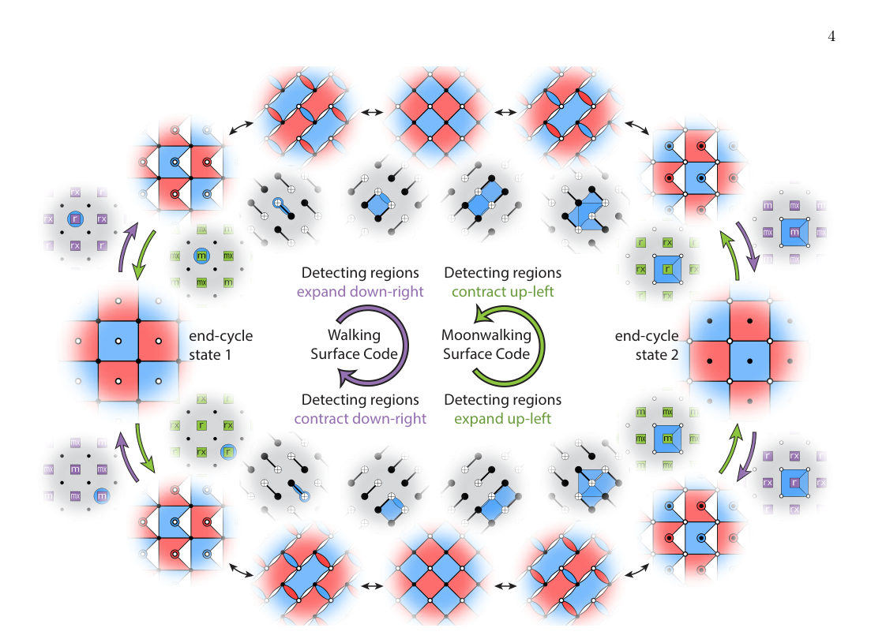
<figcaption class="paper-figure-caption"><b>Fig 1.</b> FIG. 1: The moonwalking surface code is the time-reverse of the original walking surface code. Here, we show the detecting regions and CX gates (illustrations adapted from those generated by Stim [33]) for two syndrome extraction cycles of each circuit. Qubits are depicted as alternating white and black dots to make plaquette shifts more apparent. X-type detecting regions are red and Z-type detecting regions are blue. The walking surface code circuit follows the loop clockwise and uses the outer, purple operations for measurements and resets. The moonwalking surface code circuit follows the loop counterclockwise and uses the inner, green operations for measurements and resets. Both circuits...</figcaption>
</figure>
<figure class="paper-figure-card">
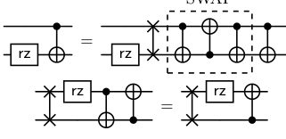
<figcaption class="paper-figure-caption"><b>Fig 2.</b> FIG. 2: The circuit equivalences and transformations to construct the moonwalking surface code circuit. A pair of SWAP operations is inserted between the reset opera- tion and first CX gate. One SWAP is commuted through the reset operation to the beginning of the syndrome ex- traction circuit. In the context of the whole code, this SWAP is meaningless. Its effect can be recovered by si- multaneously shifting all the data qubits along a diagonal by half a plaquette in software so that they appear to be placed on the sublattice formed by ancilla qubits of the previous round. The other SWAP is decomposed into CX operations which are combined with the existing CX gate and the reset operation,...</figcaption>
</figure>
<figure class="paper-figure-card">
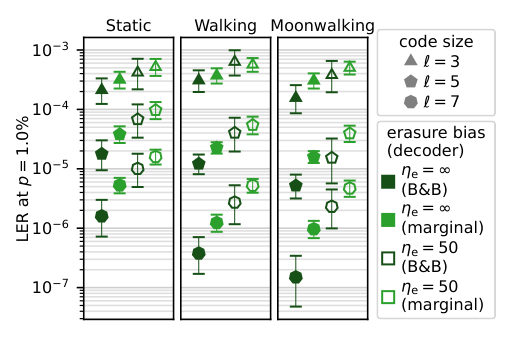
<figcaption class="paper-figure-caption"><b>Fig 3.</b> FIG. 4: Simulated logical error rate (LER) for each sur- face code circuit at a fixed physical error rate, p = 0.01, with the skip-gate leaked-qubit effect and erasure check (EC) schedule 8. The x axes are not meaningful. Marker shape indicates code distance and marker filling indicates erasure bias ηe = pleak/ppauli. Our new moonwalking sur- face code (SC) circuit significantly outperforms the static (i.e., standard rotated) SC and somewhat outperforms the original walking SC. Error bars show a likelihood ra- tio of 1000.</figcaption>
</figure>
<figure class="paper-figure-card">
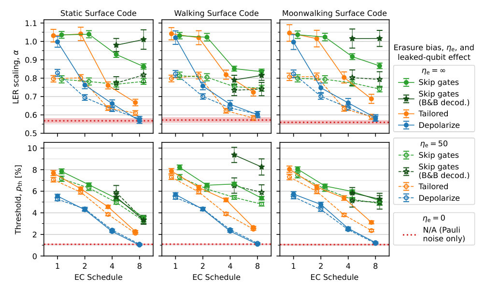
<figcaption class="paper-figure-caption"><b>Fig 4.</b> FIG. 5: Logical error rate (LER) scaling exponent, α (top row), and threshold, pth (bottom row), extracted by fitting simulated data to Eq. (1). The different EC schedules as shown on the x axis are categorical, and small horizontal offsets between points for a given schedule are added for legibility. Marker filling and line dashing indicate erasure bias, ηe = pleak/ppauli. When there is only Pauli noise, EC schedule is irrelevant, so we present that data as a horizontal line. Color indicates leaked-qubit effect. All data is for marginal decoding unless noted otherwise. Notice that branch-and-bound decoding allows one to recover erasure-like scaling, α ≈1, with EC schedules 4 and 8,...</figcaption>
</figure>
<figure class="paper-figure-card">
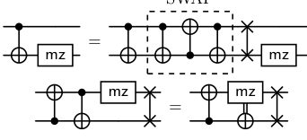
<figcaption class="paper-figure-caption"><b>Fig 5.</b> FIG. 6: The circuit equivalences and transformations to construct the walking surface code circuit [34]. Compare to Fig. 2. A pair of SWAP operations is inserted between the final CX gate and the measurement. One SWAP is commuted through the measurement operation to the end of the syndrome extraction circuit. In the context of the whole code, this SWAP is meaningless. Its effect can be recovered by simultaneously shifting all the data qubits along a diagonal by half a plaquette in software so that they appear to be placed on the sublattice formed by ancilla qubits for the next round. The other SWAP is decomposed into CX operations which are combined with the existing CX gate and the...</figcaption>
</figure>
</div>

<p><strong>Summary.</strong> This paper advances quantum error correction theory by proposing the 'moonwalking surface code' as an efficient alternative to traditional circuits. It achieves superior erasure error correction capacity using only simpler three-state readout instead of complex mid-circuit checks. The core technical contribution is a specialized branch-and-bound decoder designed to handle the non-trivial constraints arising from leakage errors.</p>
<p><strong>Why it may be interesting.</strong> This work provides a highly detailed theoretical framework for fault-tolerant quantum computation, specifically addressing practical hardware limitations like mid-circuit measurement overheads in superconducting or trapped-ion architectures.</p>
<details>
<summary>Detailed structure</summary>
<p><strong>Main problem.</strong> The core problem is developing quantum error correction (QEC) circuits that achieve superior erasure error-correction capacity while minimizing hardware overhead associated with mid-circuit checks.</p>
<p><strong>Main result.</strong> The authors show that the moonwalking surface code, when combined with three-state readout and assuming skip-gate leakage, can maintain erasure performance with zero overhead.</p>
<p><strong>Method.</strong> They introduce a specialized branch-and-bound decoder to solve the quasi-Maximum Likelihood Estimation (quasi-MLE) problem for decoding errors under strict disjointness constraints.</p>
<p><strong>Model / system.</strong> The study focuses on the surface code, comparing static, walking, and moonwalking variants. The system models error channels including leakage, Pauli errors, and erasures, analyzed using three-state readout.</p>
<p><strong>Key observables.</strong> Logical error rate scaling under erasure conditions; syndrome extraction circuits (Z stabilizer measurements); minimum weight perfect matching solutions ($ar{S}$).</p>
<p><strong>Important parameters / regimes.</strong> The comparison is made across different leakage models (Depolarizing, Tailored, Skip-gate) and erasure check schedules.</p>
<p><strong>Assumptions / limitations.</strong> Key assumptions include the faithfulness of three-state readout and modeling leaked qubits causing two-qubit gates to be entirely skipped (skip-gate model).</p>
<p><strong>Figures summary.</strong> Figures illustrate the gate sequences comparing walking vs. moonwalking circuits, showing how syndrome extraction is performed over multiple cycles. Other figures detail the structure of the branch-and-bound decoder algorithm flow.</p>
<p><strong>Paper structure.</strong> The paper systematically studies error correction protocols, introducing the moonwalking code as an improvement. It then details the necessary decoding machinery—the branch-and-bound algorithm—to handle the complex constraints imposed by leakage and erasure information.</p>
</details>
<details>
<summary>Abstract</summary>
<p>Quantum error correction (QEC) codes can correct twice as many erasure errors as Pauli errors. Because of this scaling advantage, there is significant interest in developing qubits whose dominant error channel can be converted into erasures via mid-circuit erasure checks. However, such erasure checks come with hardware overhead in practice. End-of-the-line three-state readout, in which one simultaneously measures a qubit's erasure status and computational state, is an alternative to mid-circuit erasure checks that is generally simpler to implement. In this work, we systematically study the conditions required to enable erasure performance---the doubled error-correction capacity---in the surface code with and without mid-circuit erasure checks. We introduce the moonwalking surface code, the time-reversal of the walking surface code, as a zero-overhead circuit with superior handling of leakage and erasure. Specifically, we show that it enables erasure-like logical error rate scaling when combined with three-state measurement if leaked qubits cause two-qubit gates to be skipped and an appropriate decoder is used. Our decoder, based on a branch-and-bound algorithm, specifically incorporates the noise structure of the skip-gate leaked-qubit effect.</p>
</details>
<p><sub><a href="#top">↑ back to top</a></sub></p>

<p><a id="paper-2607.29660"></a></p>
<h3 id="a-simple-necessary-and-sufficient-condition-for-yang-baxter-integrability"><a href="http://arxiv.org/abs/2607.29660v1">A Simple Necessary and Sufficient Condition for Yang--Baxter Integrability</a></h3>
<p><strong>Authors:</strong> Mizuki Sanatani, Naoto Shiraishi, Fuga Ishii<br>
<strong>Type:</strong> theory · <strong>Category:</strong> statistical mechanics · <strong>PDF:</strong> <a href="https://arxiv.org/pdf/2607.29660v1">https://arxiv.org/pdf/2607.29660v1</a><br>
<strong>Analysis basis:</strong> full PDF text, analyzed in chunks
<strong>Topic relevance:</strong> <code>analog quantum simulation</code> <strong>2/5</strong> · <code>exotic spin models in light-matter</code> <strong>1/5</strong> · <code>non-equilibrium dynamics</code> <strong>1/5</strong></p>
<div class="figure-strip-hint">↔ Scroll figures horizontally</div>
<div class="paper-figures-scroll">
<figure class="paper-figure-card">
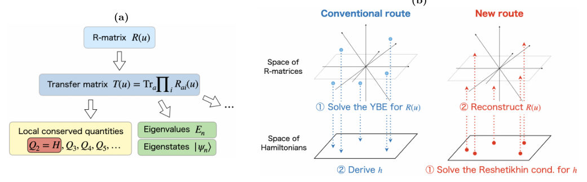
<figcaption class="paper-figure-caption"><b>Fig 1.</b> FIG. 1. Reversing the search for Yang–Baxter integrability. a, In the established algebraic framework, one starts from an R-matrix satisfying the Yang–Baxter equation and constructs the transfer matrix T(u). This construction provides a mutually commuting family of local quantities Q2, Q3, Q4, . . ., together with access to spectra, eigenstates, correlation functions, transport coefficients and thermodynamics. The Hamiltonian appears in this construction as the first nontrivial charge in the hierarchy, H = Q2. b, In the conventional search picture, the integrable locus is identified by solving the Yang–Baxter equation in the space of R-matrices, and Hamiltonian densities are then obtained...</figcaption>
</figure>
<figure class="paper-figure-card">
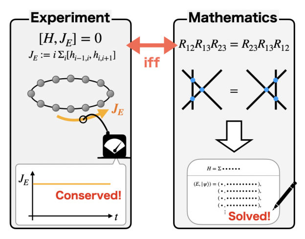
<figcaption class="paper-figure-caption"><b>Fig 2.</b> FIG. 2. Energy-current conservation as an experimental certificate of Yang–Baxter integrability. The total energy current provides an experimentally accessible probe of exact solvability in an interacting quantum spin chain. Our theorem identifies conservation of the total energy current JE = i P</figcaption>
</figure>
<figure class="paper-figure-card">
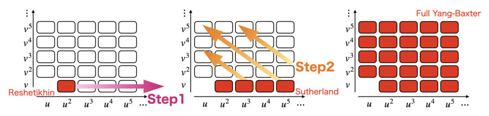
<figcaption class="paper-figure-caption"><b>Fig 3.</b> FIG. 3. From the Reshetikhin condition to the full Yang–Baxter equation. This figure locates the Reshetikhin condition within the spectral-parameter expansion of the Yang–Baxter equation and summarizes the proof strategy. Expanding the Yang–Baxter equation in two spectral parameters produces a two-dimensional array of order-by-order constraints. Some of the lowest-order constraints are automatic, and the first nontrivial Hamiltonian-level constraint is the Reshetikhin condition, marked in the figure. Step 1 shows that this single condition is sufficient to continue the one-parameter recursive construction to all orders, eliminating the constraints along the first nontrivial line. Step 2...</figcaption>
</figure>
<figure class="paper-figure-card">
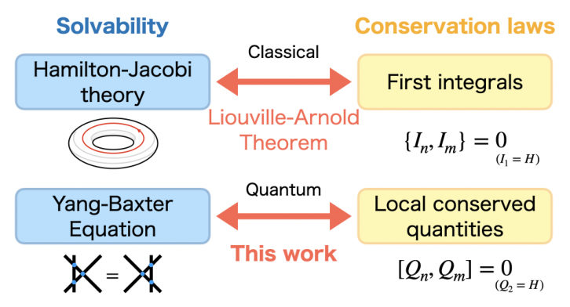
<figcaption class="paper-figure-caption"><b>Fig 4.</b> FIG. 4. A quantum counterpart of the Liouville–Arnold theorem. In classical Hamiltonian mechanics, the Liouville– Arnold theorem establishes an equivalence between conserved quantities and solvability: for a system with n degrees of freedom, the existence of n independent mutually commuting conserved quantities is equivalent to solvability in the Hamilton–Jacobi sense. In quantum systems, an analogous equivalence between local conserved quantities and Yang–Baxter solvability has long been missing. The present work establishes such a correspondence in isotropic nearest-neighbour spin chains. The known conservation-law structure in the isotropic class and the theorem proved here together show...</figcaption>
</figure>
</div>

<p><strong>Summary.</strong> The paper develops a fundamental criterion showing that Yang–Baxter integrability in quantum spin chains can be determined solely by checking a local conservation law called the Reshetikhin condition. This simplifies the search for integrable systems immensely by replacing the difficult task of finding R-matrices with a direct check on the Hamiltonian itself.</p>
<p><strong>Why it may be interesting.</strong> This work provides a powerful, experimentally accessible diagnostic tool for determining quantum integrability directly from the Hamiltonian, which is crucial for understanding complex many-body dynamics beyond simple models.</p>
<details>
<summary>Detailed structure</summary>
<p><strong>Main problem.</strong> The core problem is establishing a direct, Hamiltonian-level criterion for Yang–Baxter integrability, bypassing the traditional indirect method that starts from an R-matrix.</p>
<p><strong>Main result.</strong> The authors prove that for translation-invariant spin chains, the Reshetikhin condition is necessary and sufficient for Yang–Baxter integrability, equating it to a local conservation law.</p>
<p><strong>Method.</strong> The proof involves expanding the Yang–Baxter equation in spectral parameters and demonstrating that satisfying the lowest-order constraint (the Reshetikhin condition) forces all higher-order constraints to be satisfied.</p>
<p><strong>Model / system.</strong> The study focuses on quantum spin chains with nearest-neighbor interactions, governed by a local Hamiltonian $H = \sum h_{i, i+1}$. Integrability is characterized by the existence of an infinite hierarchy of local conserved quantities.</p>
<p><strong>Key observables.</strong> Yang–Baxter integrability; the Reshetikhin condition (a specific commutator relation); and the conservation of the total energy current ($\mathcal{J}_E$).</p>
<p><strong>Important parameters / regimes.</strong> The spectral parameter $u$ and its relationship to local conserved charges $Q_n$. The system is assumed to be 1D with nearest-neighbor interactions.</p>
<p><strong>Assumptions / limitations.</strong> The analysis relies on the assumption that the Reshetikhin condition implies the full Yang–Baxter equation under specific physical constraints (1D, translation-invariant).</p>
<p><strong>Figures summary.</strong> Figure 1 contrasts the conventional R-matrix $
ightarrow$ Transfer Matrix approach with the proposed direct Hamiltonian search. Figure 2 relates integrability to energy current conservation, and Figure 3 illustrates how the Reshetikhin condition propagates through the YBE expansion.</p>
<p><strong>Paper structure.</strong> The paper moves from defining the problem (Hamiltonian vs. R-matrix) to introducing the necessary and sufficient criterion (Reshetikhin condition). It then provides detailed mathematical proofs involving spectral parameter expansions, culminating in showing that this low-order test is equivalent to the full algebraic structure.</p>
</details>
<details>
<summary>Abstract</summary>
<p>Quantum integrability is a cornerstone of the exact theory of interacting quantum spin chains. In its standard formulation, however, one starts from R-matrices satisfying the Yang--Baxter equation, rather than from the Hamiltonian itself. It has therefore remained unclear how Yang--Baxter solvability can be characterized directly at the Hamiltonian level, and how it is related to the existence of local conservation laws. Here we prove that, in a broad standard setting, the Reshetikhin condition is not only necessary but also sufficient for Yang--Baxter integrability, thereby reducing the hidden algebraic structure of integrability to a Hamiltonian-level conservation law. Since the Reshetikhin condition is equivalent to conservation of the total energy current, this Hamiltonian-level criterion is also experimentally accessible. This result establishes a quantum counterpart of the Liouville--Arnold theorem for isotropic spin chains, stating that Yang--Baxter solvability is equivalent to an infinite hierarchy of local conserved quantities. Our result also simplifies substantially the search for integrable spin chains by replacing the search for R-matrices with a direct criterion on local Hamiltonians.</p>
</details>
<p><sub><a href="#top">↑ back to top</a></sub></p>

<p><a id="paper-2607.29623"></a></p>
<h3 id="quantum-geometric-potential-induced-conformational-transitions-in-elastic-helical-nanoribbons"><a href="http://arxiv.org/abs/2607.29623v1">Quantum geometric potential induced conformational transitions in elastic helical nanoribbons</a></h3>
<p><strong>Authors:</strong> Radha Balakrishnan, Rossen Dandoloff, Avadh Saxena<br>
<strong>Type:</strong> theory · <strong>Category:</strong> other · <strong>PDF:</strong> <a href="https://arxiv.org/pdf/2607.29623v1">https://arxiv.org/pdf/2607.29623v1</a><br>
<strong>Analysis basis:</strong> full PDF text, analyzed in chunks
<strong>Topic relevance:</strong> <code>Frenkel-Kontorova</code> <strong>2/5</strong> · <code>driven-dissipative phase transition</code> <strong>1/5</strong> · <code>non-equilibrium dynamics</code> <strong>1/5</strong></p>
<div class="figure-strip-hint">↔ Scroll figures horizontally</div>
<div class="paper-figures-scroll">
<figure class="paper-figure-card">
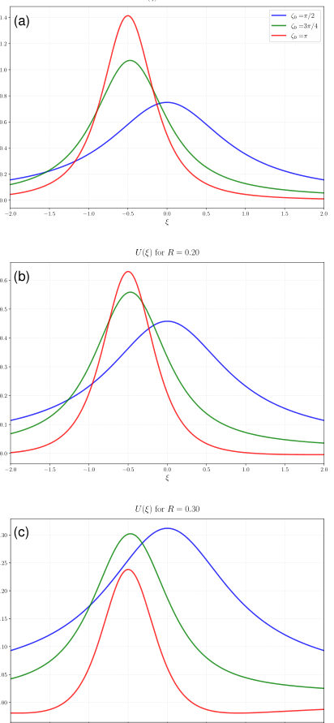
<figcaption class="paper-figure-caption"><b>Fig 1.</b> Figure 1: Plots of the total potential U(ξ) [Eq. (31)] for (a) RH = 0, (b) RH = 0.2 and (c) RH = 0.3.</figcaption>
</figure>
<figure class="paper-figure-card">
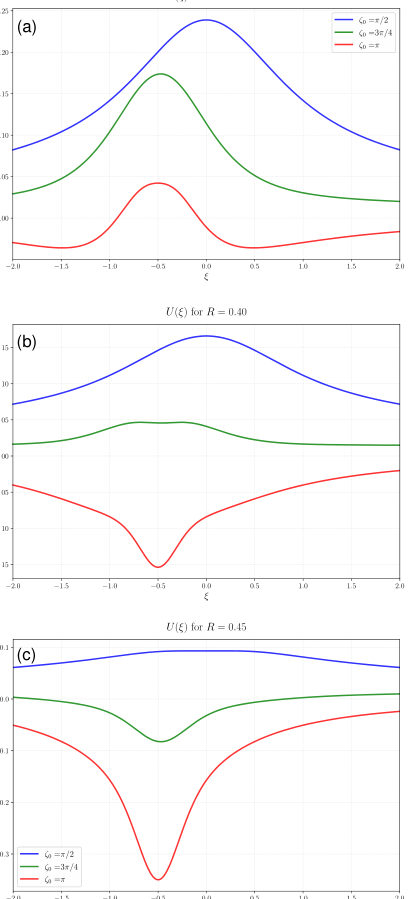
<figcaption class="paper-figure-caption"><b>Fig 2.</b> Figure 2: Plots of the total potential U(ξ) [Eq. (31)] for (a) RH = 0.35, (b) RH = 0.4 and (c) RH = 0.45.</figcaption>
</figure>
<figure class="paper-figure-card">
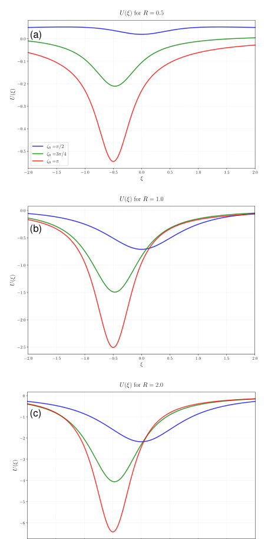
<figcaption class="paper-figure-caption"><b>Fig 3.</b> Figure 3: Plots of the total potential U(ξ) [Eq. (31)] for (a) RH = 0.5, (b) RH = 1.0 and (c) RH = 2.0.</figcaption>
</figure>
</div>

<p><strong>Summary.</strong> This theoretical study examines how quantum confinement interacts with the elasticity of helical nanoribbons. By calculating a total geometric potential, the authors show that injecting an electron stabilizes the ribbon into a specific 'normal' conformation. This suggests that electronic interactions can drive structural changes in curved nanomaterials.</p>
<p><strong>Why it may be interesting.</strong> This work connects geometry (curvature) directly to electronic properties (potential minima), offering a mechanism for emergent phenomena like Hall effects in nanoscale structures without external fields.</p>
<details>
<summary>Detailed structure</summary>
<p><strong>Main problem.</strong> The study investigates how placing a quantum particle on an elastic helical nanoribbon influences its conformational stability, leading to potential transitions.</p>
<p><strong>Main result.</strong> Electron injection induces a conformational transition towards the normal ribbon conformation because this state yields the lowest total geometric potential. This process suggests a mechanism for generating a Hall-like voltage purely from curvature effects.</p>
<p><strong>Method.</strong> The authors derived a total potential by summing an elastic potential (from a modified Canham-Helfrich model) and a quantum geometric potential (from da Costa's formulation). They analyzed the resulting 1D Schrödinger equation by varying dimensionless parameters.</p>
<p><strong>Model / system.</strong> The system is an elastic helical nanoribbon whose conformation is parameterized. The physics is governed by a total potential $U_{total} = U_Q + U_{elastic}$, which dictates the particle's localized states and the ribbon's preferred geometry.</p>
<p><strong>Key observables.</strong> Total geometric potential, existence/location of localized quantum states, and the conformational parameter $\zeta_0$.</p>
<p><strong>Important parameters / regimes.</strong> The dimensionless ratio $R_H$ (comparing quantum to elastic energy scales) is crucial; critical values of $R_H$ dictate when localization occurs.</p>
<p><strong>Assumptions / limitations.</strong> The analysis assumes the ribbon is elastic and uses approximations like $D_1 \approx D_2$ for simplifying the elastic energy model.</p>
<p><strong>Figures summary.</strong> Figures plot the total potential $U(\xi)$ versus position $\xi$ for various values of $R_H$, demonstrating how the minimum potential shifts from the binormal to the normal conformation as $R_H$ increases.</p>
<p><strong>Paper structure.</strong> The paper builds by first establishing the elastic and quantum potentials based on curvature ($M, K$), combining them into a total potential, and then analyzing this potential landscape by varying the dimensionless ratio $R_H$.</p>
</details>
<details>
<summary>Abstract</summary>
<p>We consider an {\em elastic} helical nanoribbon that can take on various conformations, and study the effect of placing a quantum particle on its curved surface. Using a modified Canham-Helfrich model for the elastic energy, we write down the local elastic potential for the ribbon in terms of its bending rigidity, mean curvature $M$ and Gaussian curvature $K$. The Schrödinger equation of a particle confined to a {\em rigid} curved surface is found using da Costa's formulation. It has a purely quantum geometric potential which depends on $M$ and $K$. The Schrödinger equation of a particle on an {\em elastic } curved surface will therefore have a total potential comprising quantum and elastic potentials. We compute $M$ and $K$ for a helical ribbon and derive the total potential which depends on the conformation and is thus geometric in nature. Defining a dimensionless quantity $R_H$, we study the behavior of the total geometric potential as $R_H$ is varied. In the absence of an electron, the elastic potential is positive and has a single positive maximum for all conformations. Further, a binormal helical ribbon conformation has the lowest potential, while the normal ribbon has the highest, with those of the intermediate ribbons lying in between these. Intriguingly, when a quantum particle is placed on the elastic ribbon, above a certain critical value of $R_H$, the presence of the quantum geometric potential {\em reverses} this order. But localized states for the particle are not supported. Only above a second critical value of $R_H$, localized states appear for all conformations. The injection of an electron on {\it any} given conformation of the elastic ribbon will induce a conformational transition to the normal ribbon conformation.</p>
</details>
<p><sub><a href="#top">↑ back to top</a></sub></p>

<p><a id="paper-2607.28961"></a></p>
<h3 id="the-shape-of-information-global-information-geometric-limits-in-multi-task-quantum-systems"><a href="http://arxiv.org/abs/2607.28961v1">The Shape of Information: Global Information Geometric Limits in Multi-task Quantum Systems</a></h3>
<p><strong>Authors:</strong> Zishuo Ren, Ziyang Chen, Hong Guo<br>
<strong>Type:</strong> theory · <strong>Category:</strong> quantum information and computing · <strong>PDF:</strong> <a href="https://arxiv.org/pdf/2607.28961v1">https://arxiv.org/pdf/2607.28961v1</a><br>
<strong>Analysis basis:</strong> full PDF text, analyzed in chunks
<strong>Topic relevance:</strong> <code>entanglement &amp; information structure</code> <strong>2/5</strong> · <code>quantum measurements</code> <strong>1/5</strong></p>
<div class="figure-strip-hint">↔ Scroll figures horizontally</div>
<div class="paper-figures-scroll">
<figure class="paper-figure-card">
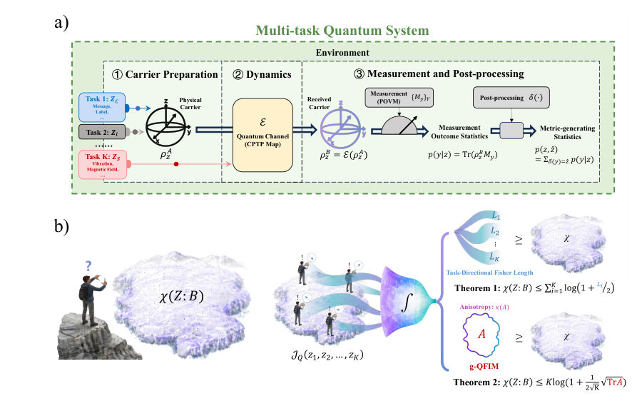
<figcaption class="paper-figure-caption"><b>Fig 1.</b> FIG. 1. Panel a): The 3-step common information-acquisition structure shared by many tasks; Panel b): The visual- ization of our two theorems which first bound the global information capacity with local fisher information and then discover the vital role the shape of information plays in multi-task systems.</figcaption>
</figure>
<figure class="paper-figure-card">

<figcaption class="paper-figure-caption"><b>Fig 2.</b> FIG. 2. Total Holevo information and QFIM-induced ceilings. In the upper panel, the solid curve shows the ex- act Holevo information of the noiseless phase ensemble and the dashed curve shows the trace-based total information bound; In the lower panel, the transition of information structure is shown through det(A) and κ(A).</figcaption>
</figure>
<figure class="paper-figure-card">
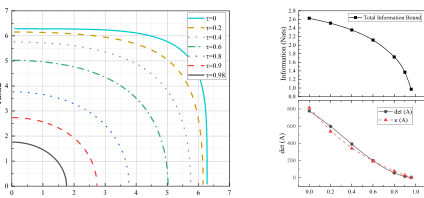
<figcaption class="paper-figure-caption"><b>Fig 3.</b> FIG. 3. Tradeoff curve family under attenuation. The curve corresponds to the attenuation factor τ = 1 −N/N0 gradually increasing from 0 to 0.98 at N0 = 1/2. Left: the tradeoff curve family; Right top: the total bound derived by TrA at η = 1/2; Right bottom: det(A) and κ(A) at η = 1/2.</figcaption>
</figure>
<figure class="paper-figure-card">
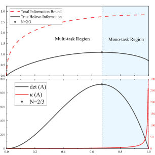
<figcaption class="paper-figure-caption"><b>Fig 4.</b> Figure 2 compares the true Holevo information χtrue of the noiseless phase ensemble with the up- per bound (2) when the physical resource N changes. Within the weak-excitation regime (N ≤1/2), the lo- cal QFIM geometry gives a sensible non-asymptotic ceiling for the global information carried by the phys-</figcaption>
</figure>
<figure class="paper-figure-card">
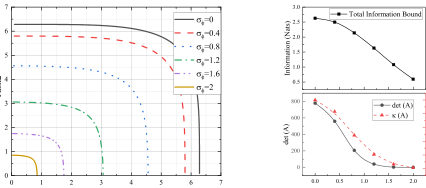
<figcaption class="paper-figure-caption"><b>Fig 5.</b> FIG. 4. Tradeoff curve family under attenuation. The curve corresponds to the attenuation factor σϕ gradually increasing from 0 to 2 rads at N = 1/2. Left: the tradeoff curve family; Right top: the total bound derived by TrA at η = 1/2; Right bottom: det(A) and κ(A) at η = 1/2.</figcaption>
</figure>
</div>

<p><strong>Summary.</strong> This paper introduces the global quantum Fisher information matrix (g-QFIM) as the fundamental constraint governing the total information capacity of quantum systems performing multiple tasks simultaneously. It derives rigorous upper bounds on the multi-task Holevo information, revealing that performance is governed by an underlying information geometry rather than simple summation. This provides crucial theoretical guidance for designing next-generation quantum networks.</p>
<p><strong>Why it may be interesting.</strong> This work provides a rigorous, geometric framework for quantifying multi-task capabilities in quantum networks, moving beyond simple additive capacity models and offering design principles for integrated systems like ISAC.</p>
<details>
<summary>Detailed structure</summary>
<p><strong>Main problem.</strong> The core problem is determining the fundamental, unified limit on the total information capacity of a single quantum carrier when multiple distinct tasks compete for its resources.</p>
<p><strong>Main result.</strong> The total task capacity is fundamentally constrained by an underlying global information geometry captured by the global quantum Fisher information matrix (g-QFIM).</p>
<p><strong>Method.</strong> The authors derive non-asymptotic, measurement-independent upper bounds on the Holevo information using information geometric principles and bounding techniques like Jensen's inequality.</p>
<p><strong>Model / system.</strong> The analysis considers general multi-task quantum systems, exemplified by a minimal model using a two-mode quantum carrier encoded in phases (e.g., photonic phase encoding).</p>
<p><strong>Key observables.</strong> Holevo information capacity ($\chi$), Global Quantum Fisher Information Matrix (g-QFIM) $A$, and task-directional Fisher lengths ($L_i$).</p>
<p><strong>Important parameters / regimes.</strong> The number of tasks ($K$), the physical resource level (e.g., mean excitation $N$), and noise parameters (attenuation, phase diffusion).</p>
<p><strong>Assumptions / limitations.</strong> The derived bounds rely on specific mathematical inequalities (Jensen's, Cauchy–Schwarz) and assume certain factorizations for prior distributions in the general K-task case.</p>
<p><strong>Figures summary.</strong> Figures illustrate the common information acquisition structure across tasks and compare theoretical capacity bounds ($    ext{Tr} \mathbf{A}$) against actual Holevo information as physical resources or noise levels change, highlighting an optimal operating point.</p>
<p><strong>Paper structure.</strong> The paper establishes the problem by identifying the need for a unified metric. It then derives two key theorems bounding the joint Holevo information using local distinguishability ($L_i$) and the global g-QFIM ($   ext{Tr} A$). The analysis proceeds to explore structural implications, such as phase transitions in performance based on resource allocation.</p>
</details>
<details>
<summary>Abstract</summary>
<p>Future quantum networks are expected to perform multiple tasks simultaneously within a single system, such as integrated sensing and communication (ISAC) architectures. Despite various metrics, we find that the evaluation of multiple tasks can be unified by their information capacity, and the total task capacity is not determined simply by addition, but is fundamentally constrained by an information geometry which we call the global quantum Fisher information matrix (g-QFIM). With this insight, we derive a non-asymptotic, measurement-independent upper bound on the Holevo information for multi-task systems, which takes a Shannon-capacity-like form. It not only quantifies the capacity limit, but also the allocability. Our results reveal a structural phase transition in multi-task performance under resource variation, where additional physical resources no longer increase independent task capacity but instead concentrate more information into a new mono-task mode. Numerical simulations based on photonic phase encoding and realistic noise channels confirm these predictions. This work establishes a unified information-geometric principle for quantum multi-task systems, with implications for the design of future quantum networks and ISAC architectures.</p>
</details>
<p><sub><a href="#top">↑ back to top</a></sub></p>

<p><a id="paper-2607.29242"></a></p>
<h3 id="how-null-model-constraints-affect-statistical-validation-in-projected-bipartite-networks"><a href="http://arxiv.org/abs/2607.29242v1">How null-model constraints affect statistical validation in projected bipartite networks</a></h3>
<p><strong>Authors:</strong> Alessandro Catalano, Rosario N. Mantegna<br>
<strong>Type:</strong> theory · <strong>Category:</strong> statistical mechanics · <strong>PDF:</strong> <a href="https://arxiv.org/pdf/2607.29242v1">https://arxiv.org/pdf/2607.29242v1</a><br>
<strong>Analysis basis:</strong> full PDF text, analyzed in chunks
<strong>Topic relevance:</strong> <code>Keldysh / 2PI / non-Gaussian methods</code> <strong>1/5</strong> · <code>analog quantum simulation</code> <strong>1/5</strong> · <code>correlated / nonlocal dissipation</code> <strong>1/5</strong> · <code>driven-dissipative phase transition</code> <strong>1/5</strong> · <code>entanglement &amp; information structure</code> <strong>1/5</strong> · <code>methods for driven-dissipative</code> <strong>1/5</strong> · <code>non-equilibrium dynamics</code> <strong>1/5</strong> · <code>non-equilibrium universality</code> <strong>1/5</strong></p>
<div class="figure-strip-hint">↔ Scroll figures horizontally</div>
<div class="paper-figures-scroll">
<figure class="paper-figure-card">
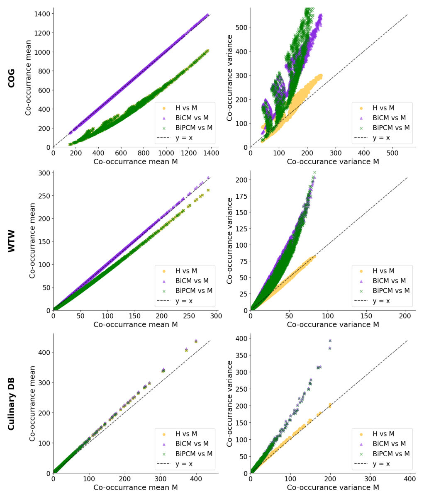
<figcaption class="paper-figure-caption"><b>Fig 1.</b> Figure 1: Scatter plots comparing the expected value ⟨Xjj′⟩(left panels) and the variance Var{Xjj′} (right panels) obtained for the BiCM (purple triangles) , BiPCM (green crosses), and Hypergeometric (orange circles) null models with the values numerically estimated for the microcanonical null model for the COG (top row), WTW (middle row), and culinary (bottom row) datasets. The dashed line is y = x.</figcaption>
</figure>
<figure class="paper-figure-card">
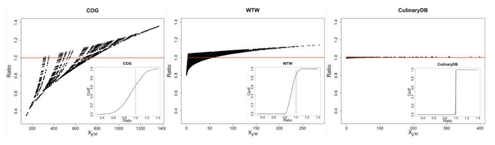
<figcaption class="paper-figure-caption"><b>Fig 2.</b> Figure 2: Ratio between the approximated value of the expected co-occurrence estimated by Eq. 24 divide by the BiCM expectation obtained by using the Poisson-Binomial distribution against the microcanonical expectation of co-occurrence for all pairs of Set A nodes. The three panels refer to COG (left), WTW (middle), and CulinaryDB (right).The insets show the cumulative probability density function of the ratio values. They are located around the value R = 1 highlighted by the red line.</figcaption>
</figure>
</div>

<p><strong>Summary.</strong> This work investigates how different theoretical null models affect the statistical validation of projected bipartite networks. The authors demonstrate that simply matching structural constraints is insufficient; instead, one must analyze the resulting probability distribution's moments (mean and variance). They conclude that the statistical consequences induced by a model's assumptions are the true measure for comparing these random ensembles.</p>
<p><strong>Why it may be interesting.</strong> While not directly about quantum systems, the rigorous statistical framework developed for comparing null models based on induced probability distributions is highly relevant to analyzing complex correlation structures found in quantum many-body simulations or network representations derived from quantum information processes.</p>
<details>
<summary>Detailed structure</summary>
<p><strong>Main problem.</strong> The statistical validation of projected bipartite networks requires comparing observed co-occurrences against random expectations derived from a null model, making the choice of this null model critical.</p>
<p><strong>Main result.</strong> Null models should be compared based on the statistical consequences their constraints induce on the test statistic's probability distribution, rather than solely on the structural constraints they preserve.</p>
<p><strong>Method.</strong> The authors compare four null models (Microcanonical, BiCM, BiPCM, Hypergeometric) by analyzing the first two moments (expectation and variance) of the co-occurrence random variable across three empirical datasets.</p>
<p><strong>Model / system.</strong> The system involves projected bipartite networks derived from real-world data like comparative genomics or international trade. The analysis focuses on the co-occurrence random variable, $X_{jj'}$, which measures shared neighbors between two nodes in one set based on connections through a second set.</p>
<p><strong>Key observables.</strong> Co-occurrence random variable ($X_{jj'}$), statistical p-value, expected value ($\langle X_{jj'} 
angle$), and variance ($    ext{Var}(X_{jj'})$).</p>
<p><strong>Important parameters / regimes.</strong> Degree heterogeneity of the non-projected layer; network size (sparse limit analysis); validation metrics like F1 score.</p>
<p><strong>Assumptions / limitations.</strong> The comparison relies on analyzing the first two moments (expectation and variance) to understand differences, even when full probability distributions are intractable. The Hypergeometric model surprisingly captures the microcanonical variance despite neglecting heterogeneity.</p>
<p><strong>Figures summary.</strong> Figure 2 shows the ratio of approximated vs BiCM expected co-occurrence for three datasets; Table 4 reports validation statistics (F1 score, Recall) comparing different null models against a microcanonical benchmark.</p>
<p><strong>Paper structure.</strong> The paper introduces the problem of statistical validation in projected bipartite networks. It details four competing null models and compares them using empirical data from genomics, trade, and food science. The core argument develops that distributional properties (moments) are more important than structural constraints alone, culminating in a comparison of model performance.</p>
</details>
<details>
<summary>Abstract</summary>
<p>Statistical validation of projected bipartite networks depends critically on the null model adopted to describe random co-occurrences. Although several null models have been proposed, their comparison has mainly focused on the validated backbones they produce rather than on the statistical assumptions underlying their construction. Here we compare four widely used null models - the microcanonical configuration model generated by the Curveball algorithm, the Bipartite Configuration Model (BiCM), the Bipartite Partial Configuration Model (BiPCM), and the Hypergeometric approximation - using three empirical bipartite systems from comparative genomics, international trade and food science. We use the statistically validated links obtained from the microcanonical bipartite configuration model as the reference benchmark for assessing performances of the other three models. Our central result is that the statistical consequences of relaxing null-model constraints cannot be understood solely from the constraints themselves but must be analyzed through the probability distribution induced for the co-occurrence statistic. In particular, the combined behaviour of the expectation and variance largely explains the observed differences among the statistically validated backbones. We further derive a leading-order sparse approximation for the BiCM expectation, showing that the first correction to the Hypergeometric prediction is controlled by the degree heterogeneity of the non-projected layer. Surprisingly, despite neglecting this heterogeneity, the Hypergeometric model accurately reproduces the co-occurrence variance of the microcanonical ensemble across all datasets. Our results suggest that null models should be compared not only according to the constraints they preserve but also according to the statistical consequences that these constraints induce on the distribution of the test statistic.</p>
</details>
<p><sub><a href="#top">↑ back to top</a></sub></p>

<p><a id="paper-2607.29046"></a></p>
<h3 id="nuclear-spin-squeezing-based-on-spin-exchange-collisions"><a href="http://arxiv.org/abs/2607.29046v1">Nuclear Spin Squeezing Based on Spin-Exchange Collisions</a></h3>
<p><strong>Authors:</strong> He-bin Zhang, Yuanjiang Tang, Yong-Chun Liu<br>
<strong>Type:</strong> theory · <strong>Category:</strong> other · <strong>PDF:</strong> <a href="https://arxiv.org/pdf/2607.29046v1">https://arxiv.org/pdf/2607.29046v1</a><br>
<strong>Analysis basis:</strong> full PDF text, analyzed in chunks
<strong>Topic relevance:</strong> <code>analog quantum simulation</code> <strong>1/5</strong> · <code>correlated / nonlocal dissipation</code> <strong>1/5</strong> · <code>driven-dissipative phase transition</code> <strong>1/5</strong> · <code>entanglement &amp; information structure</code> <strong>1/5</strong> · <code>exotic spin models in light-matter</code> <strong>1/5</strong> · <code>methods for driven-dissipative</code> <strong>1/5</strong> · <code>non-equilibrium dynamics</code> <strong>1/5</strong> · <code>spintronics-quantum-optics interface</code> <strong>1/5</strong></p>
<div class="figure-strip-hint">↔ Scroll figures horizontally</div>
<div class="paper-figures-scroll">
<figure class="paper-figure-card">
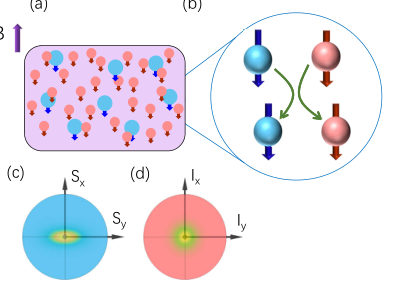
<figcaption class="paper-figure-caption"><b>Fig 1.</b> FIG. 1. (Color online) (a) Schematic diagram of the alkali- metal (blue) and noble-gas (red) mixture with the spin- exchange collisions between the alkali-metal electronic spins and the noble-gas nuclear spins as shown in (b). The col- lective alkali and noble-gas spins are prepared initially to a SSS and CSS as shown in (c) and (d), respectively, with the collective spins along the same direction.</figcaption>
</figure>
<figure class="paper-figure-card">
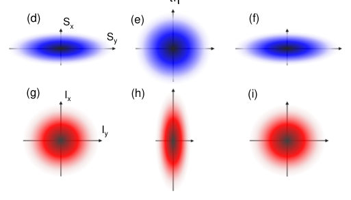
<figcaption class="paper-figure-caption"><b>Fig 2.</b> FIG. 2. (Color online) Evolution of the spin-squeezing param- eter under the Hamiltonian in Eq. (1) for ns = 50, ni = 50 in (a), for ns = 50, ni = 500 in (b), and under the Hamiltonian in Eq. (5) with the magnetic field along z-axis satisfying the resonance condition (γs −γi)B = η 2 (ni −ns) for ns = 50, ni = 500 in (c). Red (blue) curves and solid (open) circles denote the analytical and numerical results of the squeezing parameter of the noble-gas (alkali-metal) spins. The inset in (c) shows the transfer efficiency of spin squeezing defined as ε = log10ξ2 i,op/log10ξ2 s,o without and with a magnetic field Br denoted by the blue dotted curve and green solid curve, respectively, as a function of...</figcaption>
</figure>
<figure class="paper-figure-card">

<figcaption class="paper-figure-caption"><b>Fig 3.</b> FIG. 4. (Color online) (a) The optimal squeezing parameter of noble-gas nuclear spins as a function of the deviation δB of the magnetic field from Br for different ratios of atomic numbers r = ni/ns, with the initial squeezing parameter of alkali spins ξ2 s,0 = 10−2. According to the curve for ni/ns = 109 and Eq. (6), if J ≈80Hz, a magnetic field accuracy of about 1nT is enough for efficient transfer of spin squeezing from alkali spins to noble-gas spins, as marked by the red arrow. (b) Evolution of the squeezing parameters of alkali and noble- gas spins for different relaxation rate Γs of alkali spins with ns = 50, ni = 100. The relaxation rate of noble-gas spins is several orders of magnitude...</figcaption>
</figure>
<figure class="paper-figure-card">

<figcaption class="paper-figure-caption"><b>Fig 4.</b> FIG. 3. (Color online) (a) Evolution of the spin-squeezing pa- rameters manipulated by the magnetic field sequence shown in (b). Generating nuclear spin squeezing (blue region): Set- ting B = Br, the squeezing transfer is turned on. After the duration τop, the noble-gas nuclear spins will evolve to a SSS with the same squeezing parameter as the initial alkali-metal spins. Storing nuclear spin squeezing (red region): Setting B = Boff at t = τop, the squeezing transfer between alkali and noble-gas spins is turned off. Thus, the spin squeezing resides in the long-lifetime noble-gas nuclear spins. Measuring nuclear spin squeezing (orange region): Setting B = Br, the alkali spins in the probe...</figcaption>
</figure>
<figure class="paper-figure-card">

<figcaption class="paper-figure-caption"><b>Fig 5.</b> FIG. 5. (Color online) Schematic diagram of the quasiprob- ability distribution of a SSS on the Bloch sphere. The green double arrows indicate the span of the spin fluctuation in the direction of the anti-squeezing.</figcaption>
</figure>
</div>

<p><strong>Summary.</strong> The paper details a method to generate and store high levels of nuclear spin squeezing ($  ext{SSS}$) in noble gases by coupling them to alkali-metal spins via controlled spin-exchange collisions. By applying a specific magnetic field, the authors overcome limitations related to atomic number mismatch, enabling the transfer of quantum correlations into macroscopic ensembles for long-term storage and subsequent measurement.</p>
<p><strong>Why it may be interesting.</strong> This work is highly relevant as it proposes a robust, scalable platform for quantum memory utilizing long-lived nuclear spins. The ability to engineer coherence transfer between different types of spins using external fields is a key technique in open quantum systems and quantum sensing.</p>
<details>
<summary>Detailed structure</summary>
<p><strong>Main problem.</strong> The challenge is efficiently generating, manipulating, and measuring nuclear spin squeezing (SSS) in noble-gas systems that possess ultra-long coherence times but are difficult to manipulate.</p>
<p><strong>Main result.</strong> The authors propose using coherent spin-exchange collisions with alkali-metal ensembles, controlled by an external magnetic field, to transfer SSS to macroscopic noble-gas spins ($\ge 10^{20}$ atoms) and store it for long periods.</p>
<p><strong>Method.</strong> The method involves applying a specific resonant magnetic field ($B_r$) to mediate the spin exchange, enabling controllable transfer of quantum correlations from one spin ensemble to another.</p>
<p><strong>Model / system.</strong> The system consists of two coupled spin ensembles: alkali-metal electronic spins and noble-gas nuclear spins. The interaction is modeled by a Hamiltonian derived from coherent spin-exchange collisions, which can be tuned using an external magnetic field $B$.</p>
<p><strong>Key observables.</strong> Spin-squeezing parameter ($\xi^2$), evolution of squeezing parameters $\xi_s^2(t)$ and $\xi_i^2(t)$, and the variance of spin components.</p>
<p><strong>Important parameters / regimes.</strong> The coupling strength ($J$), atomic number ratio ($r = n_i/n_s$), and the applied magnetic field $B$ (especially the resonant field $B_r$).</p>
<p><strong>Assumptions / limitations.</strong> The process relies on achieving a strong-coupling regime ($J \gg \Gamma_s$) for efficient transfer, and assumes that the noble-gas spins retain coherence over days.</p>
<p><strong>Figures summary.</strong> Figures illustrate the schematic setup (alkali/noble gas mixture), the three-step cycle of squeezing manipulation (Generation $
ightarrow$ Storage $
ightarrow$ Measurement) using magnetic field control, and parameter evolution vs. field deviation.</p>
<p><strong>Paper structure.</strong> The paper develops by first establishing the physical model via the spin-exchange Hamiltonian, then deriving the conditions for resonant transfer using a specific magnetic field $B_r$, and finally detailing the three-step protocol (preparation, storage, readout) necessary to demonstrate measurable SSS in the noble gas.</p>
</details>
<details>
<summary>Abstract</summary>
<p>Isolation from environment leads to the days-long lifetime of noble-gas nuclear spins, but also brings great challenges to the preparation, manipulation, and measurement of nuclear-spin quantum states. Here we find that nuclear spin squeezing, with ultra-long lifetime and huge atomic number, can be efficiently obtained and manipulated based on the coherent spin-exchange interaction between alkali-metal and noble-gas ensembles. Thanks to the considerable advantage of our proposal in preparing the spin squeezing of the macroscopic atomic ensemble with a huge atomic number, even the nuclear spin-squeezed state containing 10^20 atoms or more is obtainable with preexisting techniques. Further, the days-long storage and measurement of nuclear spin squeezing can be performed by the coherent manipulation of a magnetic field. This proposal can be implemented in hot atomic ensembles, whose ease of access and high adaptability to various environments will significantly facilitate the research and application of nuclear-spin nonclassical states in precision measurement, quantum information, and fundamental physics.</p>
</details>
<p><sub><a href="#top">↑ back to top</a></sub></p>

<p><a id="paper-2607.29392"></a></p>
<h3 id="sound-attenuation-and-velocity-shift-in-antiferromagnetic-spin-12-chains"><a href="http://arxiv.org/abs/2607.29392v1">Sound attenuation and velocity shift in antiferromagnetic spin-1/2 chains</a></h3>
<p><strong>Authors:</strong> Edmond Orignac, Emeric Caprani, Roberta Citro<br>
<strong>Type:</strong> theory · <strong>Category:</strong> strongly correlated electrons · <strong>PDF:</strong> <a href="https://arxiv.org/pdf/2607.29392v1">https://arxiv.org/pdf/2607.29392v1</a><br>
<strong>Analysis basis:</strong> full PDF text, analyzed in chunks
<strong>Topic relevance:</strong> <code>Frenkel-Kontorova</code> <strong>1/5</strong> · <code>Keldysh / 2PI / non-Gaussian methods</code> <strong>1/5</strong> · <code>analog quantum simulation</code> <strong>1/5</strong> · <code>exotic spin models in light-matter</code> <strong>1/5</strong> · <code>spintronics-quantum-optics interface</code> <strong>1/5</strong></p>
<div class="figure-strip-hint">↔ Scroll figures horizontally</div>
<div class="paper-figures-scroll">
<figure class="paper-figure-card">

<figcaption class="paper-figure-caption"><b>Fig 1.</b> FIG. 1. First and second derivatives of the free energy of the XY spin chain in the vicinity of h = −J from Eq. (25) for T = 0.03J. The first derivative is going to zero, and would present a cusp at T = 0 while the second derivative presents a strong dip near the critical field, that becomes a divergence for T →0. As a result, the sound velocity shift shows a dip near saturation.</figcaption>
</figure>
<figure class="paper-figure-card">

<figcaption class="paper-figure-caption"><b>Fig 2.</b> FIG. 2. First derivative of the free energy of the Heisenberg spin-1/2 chain with respect to the exchange interaction as a function of the magnetic field for varying temperatures. In the ground state, the derivative goes to a constant after the critical field h = 2J. Just below the critial field, it shows a cusp of the form 1/4−C(2J−h)1/2. At finite temperature, the cusp is rounded off, and becomes unobservable for T &gt; J/2.</figcaption>
</figure>
<figure class="paper-figure-card">

<figcaption class="paper-figure-caption"><b>Fig 3.</b> FIG. 3. Second derivative of the free energy of the Heisenberg spin-1/2 chain with respect to the exchange interaction as a function of the magnetic field for varying temperatures. In the ground state, the second derivative exhibits a divergence ∼(2J −h)−1/2. As temperature is increased, the divergence is replaced by a dip that becomes broader and shallower as temperature is increased. At temperatures larger than J/2, only a minimum can be observed.</figcaption>
</figure>
<figure class="paper-figure-card">

<figcaption class="paper-figure-caption"><b>Fig 4.</b> FIG. 4. Plot of attenuation in the XXZ chain as a func- tion of temperature for a fixed value of the wavevector k. At low temperatures, T ≪uk, the attenuation is linear in tem- perature. At high temperatures, it is inversely proportional to temperature. The attenuation reaches its maximum for T = 0.1308uk.</figcaption>
</figure>
<figure class="paper-figure-card">

<figcaption class="paper-figure-caption"><b>Fig 5.</b> FIG. 5. Crossover behavior of the scaling function T −3αk = f(uk/T) as a function of uk/T for low magnetic field. When the wavelength 2π/k of the ultrasound exceeds the thermal length u/T, the attenuation αk ∼k4/T, whereas when the wavelength is shorted than u/T the attenuation goes as αk ∼ Tk2.</figcaption>
</figure>
</div>

<p><strong>Summary.</strong> This paper theoretically analyzes sound attenuation and velocity shifts in spin-1/2 antiferromagnetic chains. It connects these measurable elastic responses to the fundamental thermodynamic derivatives of the system's free energy. By combining bosonization with advanced quantum statistical mechanics, it predicts universal behaviors near critical points and provides quantitative scaling laws for various temperature regimes.</p>
<p><strong>Why it may be interesting.</strong> This work provides a rigorous theoretical link between macroscopic elastic properties (sound velocity) and microscopic quantum magnetic interactions (spin Hamiltonian parameters), which is highly relevant to understanding emergent phenomena in correlated materials.</p>
<details>
<summary>Detailed structure</summary>
<p><strong>Main problem.</strong> The study investigates how sound attenuation and velocity shifts (magnetoelastic coupling) manifest in antiferromagnetic spin-1/2 chains subjected to an external magnetic field.</p>
<p><strong>Main result.</strong> The analysis predicts universal behavior near quantum critical points, such as $z=2$, and establishes relationships between the elastic response and derivatives of the system's free energy with respect to exchange interactions.</p>
<p><strong>Method.</strong> The work employs a combination of linear response theory, bosonization techniques for low-energy physics in the Tomonaga-Luttinger liquid phase, and advanced thermodynamic calculations using quantum transfer matrix methods.</p>
<p><strong>Model / system.</strong> The system modeled is an antiferromagnetic spin-1/2 XXZ chain coupled to longitudinal acoustic phonons. The Hamiltonian includes terms describing the spin interactions ($H_0$) and the magnetoelastic coupling ($H_{ap}, H_1, H_2$).</p>
<p><strong>Key observables.</strong> Sound velocity shift ($\Delta\omega_k$), ultrasound attenuation coefficient ($\alpha_k$), and derivatives of the free energy ($F$) with respect to exchange couplings.</p>
<p><strong>Important parameters / regimes.</strong> Temperature ($T$), external magnetic field ($h$), and coupling constants like $J$ and $J_z$. Key regimes include the Tomonaga-Luttinger liquid phase and the fully polarized phase.</p>
<p><strong>Assumptions / limitations.</strong> The analysis relies on perturbative expansions for response functions, using bosonization for low-energy limits, and relating elastic properties to thermodynamic derivatives of the free energy.</p>
<p><strong>Figures summary.</strong> Figures illustrate how the first and second derivatives of the free energy ($\partial F / \partial J$ and $\partial^2 F / \partial J^2$) exhibit cusp-like singularities or divergences near magnetic saturation ($h = \pm J$), leading to predicted dips in sound velocity.</p>
<p><strong>Paper structure.</strong> The paper progresses from general linear response theory for the spin-phonon coupling, moves to specialized low-energy treatments using bosonization (TLL phase), and culminates in calculating thermodynamic derivatives of the free energy via quantum transfer matrix methods for finite temperatures.</p>
</details>
<details>
<summary>Abstract</summary>
<p>We investigate ultrasound attenuation and sound velocity shift in antiferromagnetic spin-1/2 XXZ chains in magnetic field. We relate the sound velocity shift to derivatives of the free energy with respect to exchange interactions, permitting its calculation with integrability techniques at any temperature. Using bosonization, we predict the sound velocity shift exhibits a quadratic temperature correction at low temperatures in the Tomonaga-Luttinger liquid phase. Close to the fully polarized phase, a universal behavior associated with z=2 quantum criticality is found. In the Tomonaga-Luttinger liquid phase, ultrasound attenuation obeys a scaling law as a function of wavelength and temperature. An enhancement of attenuation is obtained near the fully polarized phase.</p>
</details>
<p><sub><a href="#top">↑ back to top</a></sub></p>

<p><a id="paper-2607.29030"></a></p>
<h3 id="first-principles-carrier-mobility-and-optical-absorption-of-strained-zno-with-self-consistent-hubbard-interactions"><a href="http://arxiv.org/abs/2607.29030v1">First-principles carrier mobility and optical absorption of strained ZnO with self-consistent Hubbard interactions</a></h3>
<p><strong>Authors:</strong> Hong-Guk Min, Wooil Yang, Sabyasachi Tiwari, Feliciano Giustino, Young-Woo Son<br>
<strong>Type:</strong> theory · <strong>Category:</strong> strongly correlated electrons · <strong>PDF:</strong> <a href="https://arxiv.org/pdf/2607.29030v1">https://arxiv.org/pdf/2607.29030v1</a><br>
<strong>Analysis basis:</strong> full PDF text, analyzed in chunks
<strong>Topic relevance:</strong> <code>Keldysh / 2PI / non-Gaussian methods</code> <strong>1/5</strong> · <code>analog quantum simulation</code> <strong>1/5</strong> · <code>driven-dissipative phase transition</code> <strong>1/5</strong> · <code>methods for driven-dissipative</code> <strong>1/5</strong></p>
<div class="figure-strip-hint">↔ Scroll figures horizontally</div>
<div class="paper-figures-scroll">
<figure class="paper-figure-card">

<figcaption class="paper-figure-caption"><b>Fig 1.</b> FIG. 1. Atomic structure of ZnO and the corresponding Brillouin zones (BZs). (a) Primitive unit cell of unstrained wurzite ZnO. (b) Top view of the atomic structure. Red ar- rows indicate the primitive lattice vectors, while dashed line shows the boundary of the unit cell. (c) Hexagonal and (d) or- thorhombic BZs, with high-symmetry points highlighted with red dots.</figcaption>
</figure>
<figure class="paper-figure-card">

<figcaption class="paper-figure-caption"><b>Fig 2.</b> FIG. 2. Electron and phonon band structures of ZnO under strain. (a), (b) Electronic structure of pristine and 4.8% εyy- strained ZnO, respectively. (c), (d) Corresponding phonon dispersions for pristine and 4.8% εyy-strained ZnO.</figcaption>
</figure>
<figure class="paper-figure-card">

<figcaption class="paper-figure-caption"><b>Fig 3.</b> FIG. 3. Transport and optical properties of ZnO under strain. (a)–(c) Relative change of the phonon-limited electron mobility along the (a) x, (b) y (strain), and (c) z directions. The changes in percent are shown with respect to the µ0 i (T), which denotes the pristine mobility at each temperature. The strained mobilities are colored in shades of blue, with darker colors indicating larger εyy strain ranging from 0.8% to 4.8%. (d) Optical absorption spectra as a function of photon energy. The pristine spectrum is shown in pink, while the εyy-strained spectra are plotted in progressively darker blue, consistent with the color scheme used for the mobility. (e),(f) Imaginary dielectric...</figcaption>
</figure>
<figure class="paper-figure-card">

<figcaption class="paper-figure-caption"><b>Fig 4.</b> FIG. 4. Strain dependence of el-ph interactions. (a) Rel- ative change in the effective mass along the strain direction and the el–ph scattering rate as a function of applied εyy strain, normalized to the pristine values. Blue and red cir- cles denote effective mass and scattering rate, respectively. (b) Spectral decomposition of the scattering rate. Solid red (blue) curves show the scattering-rate contributions for the 0% (4.8%) strained case. Dotted curves of the corresponding colors indicate the cumulative scattering rates. Inset: Mag- nified view for phonon energies below 6 meV. (c), (d) Defor- mation potential Eq. 1 of the lowest conduction band for the (c) 0% and (d) 4.8% εyy-strained...</figcaption>
</figure>
</div>

<p><strong>Summary.</strong> This theoretical study uses an advanced DFPT+U method to examine how strain modifies the electronic and optical properties of ZnO. The research finds that moderate tensile strain can selectively boost electron mobility by 19% without compromising the material's transparency in the visible spectrum. This establishes a powerful computational tool for designing high-performance, strain-engineered oxide semiconductors.</p>
<p><strong>Why it may be interesting.</strong> While focused on solid-state physics, the use of advanced correlated electron methods like DFT+U to model material responses under external perturbations (strain) is relevant for understanding many-body effects in quantum materials.</p>
<details>
<summary>Detailed structure</summary>
<p><strong>Main problem.</strong> The study investigates how strain affects key performance parameters like carrier mobility and optical absorption in oxide semiconductors for use in transparent displays.</p>
<p><strong>Main result.</strong> Uniaxial tensile strain up to 4.8% along [\bar{1}10] increases room-temperature electron mobility by 19% while keeping visible-range optical absorption essentially unchanged.</p>
<p><strong>Method.</strong> The authors employ a newly developed Density-Functional Perturbation Theory with a self-consistent Hubbard correction (DFPT+U) to model electron-phonon interactions and correlation effects.</p>
<p><strong>Model / system.</strong> The system studied is strained Zinc Oxide (ZnO), modeled using first-principles calculations that account for on-site Coulomb repulsion via the Hubbard U term, particularly applied to the O 2p manifold.</p>
<p><strong>Key observables.</strong> Room-temperature electron mobility, optical absorption spectrum, lattice parameters ($a', c'$), and band gap energy.</p>
<p><strong>Important parameters / regimes.</strong> Uniaxial tensile strain ($\varepsilon_{yy}$) up to 4.8%; Hubbard parameter $U_p$; Temperature (300 K).</p>
<p><strong>Assumptions / limitations.</strong> The approach assumes that the minimal Hubbard correction applied only to the O 2p orbital is sufficient, and it focuses on in-plane tensile strain relevant for thin films.</p>
<p><strong>Figures summary.</strong> Figures illustrate atomic structures under strain, electronic/phonon band dispersions, temperature dependence of mobility, and changes in optical absorption spectra as a function of strain.</p>
<p><strong>Paper structure.</strong> The paper progresses by establishing the theoretical framework (DFPT+U), calculating structural relaxations and electronic properties under varying uniaxial strains, quantifying the resulting changes in carrier transport (mobility) and optical response (absorption).</p>
</details>
<details>
<summary>Abstract</summary>
<p>Carrier mobility and optical absorption are key performance parameters of oxide semiconductors in transparent and flexible displays. We use a newly developed density-functional perturbation theory with a self-consistent Hubbard correction (DFPT+U) to study phonon-limited electron transport and phonon-assisted optical absorption in strained zinc oxide (ZnO). This parameter-free approach accounts for electron-phonon interactions and on-site correlation effects simultaneously. Electronic structures and phonon dispersions are computed under three distinct uniaxial strain directions. Uniaxial tensile strain up to 4.8% along [\bar110] is found to increase the room-temperature electron mobility by 19% while leaving visible-range optical absorption essentially unchanged. These results demonstrate that moderate strain can selectively enhance carrier transport without degrading optical transparency, and establish DFPT+U as an effective framework for predicting strain-dependent transport and optical properties in wide-band-gap oxides with implications for strain-engineered display and optoelectronic applications.</p>
</details>
<p><sub><a href="#top">↑ back to top</a></sub></p>

<p><a id="paper-2607.28866"></a></p>
<h3 id="generative-iqp-circuit-learning-with-physics-informed-latent-initialization"><a href="http://arxiv.org/abs/2607.28866v1">Generative IQP Circuit Learning with Physics-Informed Latent Initialization</a></h3>
<p><strong>Authors:</strong> Chen-Yu Liu, Leonardo Placidi, Marco Ballarin, Enrico Rinaldi<br>
<strong>Type:</strong> both · <strong>Category:</strong> disordered systems and neural networks · <strong>PDF:</strong> <a href="https://arxiv.org/pdf/2607.28866v1">https://arxiv.org/pdf/2607.28866v1</a><br>
<strong>Analysis basis:</strong> full PDF text, analyzed in chunks
<strong>Topic relevance:</strong> <code>analog quantum simulation</code> <strong>1/5</strong> · <code>driven-dissipative phase transition</code> <strong>1/5</strong> · <code>methods for driven-dissipative</code> <strong>1/5</strong> · <code>non-equilibrium dynamics</code> <strong>1/5</strong></p>
<div class="figure-strip-hint">↔ Scroll figures horizontally</div>
<div class="paper-figures-scroll">
<figure class="paper-figure-card">

<figcaption class="paper-figure-caption"><b>Fig 1.</b> FIG. 1. Schematic overview of the proposed physics-informed latent initialization scheme for IQP generative learning. (a) A latent-conditioned PINN surrogate is trained on lower-resolution Burgers’ equation solution data, using one latent vector z(νi) for each viscosity instance νi (Sec. III). (b) For the reference viscosity ν0, the corresponding classical latent representation z(ν0) is transferred to initialize the IQP latent variable θ(ν0) lat . (c) The IQP model is then trained on high-resolution data in two stages: first, the transferred reference latent is used to learn the shared circuit core θcore; second, with θcore fixed, the instance- dependent IQP latent variables θ(νi) lat are...</figcaption>
</figure>
<figure class="paper-figure-card">

<figcaption class="paper-figure-caption"><b>Fig 2.</b> FIG. 2. PRH-motivated view of latent alignment between the PINN surrogate and the IQP generative model. A parameterized family of physical solutions forms an underlying solution manifold M. The PINN and IQP models induce different latent representations of this same family through ΦPINN and ΦIQP. While the two latent coordinate systems need not match directly, their inter-instance relational structure may be approximately preserved. This motivates transferring the PINN latent representation to initialize the IQP latent variable.</figcaption>
</figure>
<figure class="paper-figure-card">

<figcaption class="paper-figure-caption"><b>Fig 3.</b> FIG. 3. Training loss during the reference-core learning step at ν0 = 0.06, comparing physics-informed initialization and random initialization of the IQP latent variable. The three panels correspond to the Burgers’ equation initial conditions dual exp, exp, and sin. In all cases, the PINN-initialized run uses a latent representation transferred from a 32×32 classical surrogate. The plotted quantity is the MMD objective used to train the shared IQP core θcore.</figcaption>
</figure>
<figure class="paper-figure-card">

<figcaption class="paper-figure-caption"><b>Fig 4.</b> FIG. 4. Qualitative comparison between physics-informed latent initialization and random latent initialization at the unseen viscosity value ν = 0.28. The IQP prediction is obtained by interpolating between neighboring latent anchors and reconstructing the solution from 106 measurement shots. Columns correspond to the three initial conditions dual exp, exp, and sin. The top row panels (a)–(c) show the numerical ground-truth solutions of Burgers’ equation, the middle row panels (d)–(f) show the predictions obtained with physics-informed initialization of the IQP latent adaptation, and the bottom row panels (g)–(i) shows the corresponding predictions from the baseline latent-adaptation scheme...</figcaption>
</figure>
<figure class="paper-figure-card">

<figcaption class="paper-figure-caption"><b>Fig 5.</b> FIG. 5. Mean-squared error (MSE) between the reconstructed IQP predictions and the numerical solutions across unseen viscosity values ν ∈{0.13, 0.18, 0.23, 0.28, 0.33, 0.38, 0.43, 0.48, 0.53}. The three panels correspond to the initial conditions dual exp, exp, and sin. We compare the baseline latent-adaptation method with random initialization against physics-informed initialization obtained from classical PINN surrogates trained at resolutions 32×32, 16×16, and 12×12. The PINN-initialized variants consistently outperform the random-initialization baseline, while the dependence on surrogate resolution is not entirely uniform across initial conditions; in particular, for the exp case, the...</figcaption>
</figure>
</div>

<p><strong>Summary.</strong> The paper proposes an advanced method for training quantum generative models based on IQP circuits by incorporating classical physics knowledge. It uses a Physics-Informed Neural Network (PINN) to generate a structured latent code that initializes the quantum model's parameters. This physics-informed initialization significantly improves the model's ability to accurately and efficiently generate solutions to parameterized PDEs compared to purely random initialization.</p>
<p><strong>Why it may be interesting.</strong> This work bridges quantum machine learning with continuum physics modeling by using deep learning techniques (PINNs) to inject physical constraints into the initial state of a quantum model, which is highly relevant for simulating complex quantum many-body systems where accurate initialization is crucial.</p>
<details>
<summary>Detailed structure</summary>
<p><strong>Main problem.</strong> The primary goal is to improve quantum generative learning based on IQP circuits by replacing random latent variable initialization with a physics-informed scheme.</p>
<p><strong>Main result.</strong> Physics-informed initialization derived from a PINN surrogate consistently outperforms random initialization, leading to improved adaptation behavior and stronger generative accuracy for solving PDEs like Burgers' equation.</p>
<p><strong>Method.</strong> The authors train a Physics-Informed Neural Network (PINN) on low-resolution PDE solutions to extract a latent representation, which is then used to initialize the latent variables of an IQP quantum model for subsequent high-resolution adaptation.</p>
<p><strong>Model / system.</strong> The system involves solving parameterized Partial Differential Equations (PDEs), specifically Burgers' equation. The modeling framework combines an IQP circuit (quantum) with a PINN surrogate (classical/ML) to learn the solution manifold in a latent space.</p>
<p><strong>Key observables.</strong> Reconstruction accuracy, Mean Squared Error (MSE) of the generated PDE solutions across varying viscosity settings ($
u$), and pairwise latent correlations between different physical parameters.</p>
<p><strong>Important parameters / regimes.</strong> Viscosity parameter ($
u$, e.g., $\alpha$ or $
u \in [0.11, 0.51]$), low-dimensional latent vector size ($d_{    ext{lat}}=50$), and the structure of the IQP circuit (e.g., 18 qubits).</p>
<p><strong>Assumptions / limitations.</strong> The approach relies on a Representation Hypothesis suggesting that classical and quantum models parameterize the same underlying PDE solution manifold, allowing for latent space transfer.</p>
<p><strong>Figures summary.</strong> Figures schematically illustrate the three-stage process: (a) PINN training on low-res data; (b) transferring the classical latent $z(
u)$ to initialize the IQP latent variable $ heta_{  ext{lat}}$; and (c) two-stage IQP adaptation on high-resolution data.</p>
<p><strong>Paper structure.</strong> The paper introduces the problem of inefficient random initialization in quantum generative learning. It proposes using a PINN surrogate trained on PDEs to generate a physics-informed latent code, which initializes the IQP model. The methodology details the two-stage training process (shared core $
ightarrow$ latent adaptation) and validates this against random initialization and classical baselines like cDCGANs.</p>
</details>
<details>
<summary>Abstract</summary>
<p>Quantum generative learning based on instantaneous quantum polynomial-time (IQP) circuits can benefit from efficient classical training strategies. A recent latent adaptation framework for IQP-based generative modeling transfers shared circuit parameters across instances of the same task with different hyperparameters while adapting only a low-dimensional latent variable for each new instance. However, existing approaches initialize this latent variable randomly, which can limit optimization efficiency and performance. In this work, we introduce a physics-informed latent initialization scheme for IQP generative learning to improve upon existing random initialization schemes. Motivated by the platonic representation hypothesis, we use latent representations extracted from a classical physics-informed neural network (PINN) surrogate to initialize the latent variables of the quantum model for the solution of the Burgers' equation. The initialized IQP model is then adapted on a higher-resolution solution domain. We find that this structured initialization consistently outperforms random latent initialization, yielding improved adaptation behavior and stronger generative accuracy across multiple viscosity settings. These results show that classical surrogate representations can provide useful inductive bias for quantum generative models and offer a practical route to improved initialization in IQP-based learning.</p>
</details>
<p><sub><a href="#top">↑ back to top</a></sub></p>

<p><a id="paper-2607.29249"></a></p>
<h3 id="beyond-stoner-wohlfarth-machine-learning-models-and-symbolic-regression-of-hard-magnet-properties"><a href="http://arxiv.org/abs/2607.29249v1">Beyond Stoner-Wohlfarth: Machine-Learning Models and Symbolic Regression of Hard-Magnet Properties</a></h3>
<p><strong>Authors:</strong> Samuel J. R. Holt, Christina Winkler, Timoteo Colnaghi, Martin Lang, Swapneel A. Pathak, Andrea Petrocchi, Michael Adams, Thomas Schrefl, Andreas Marek, Hans Fangohr<br>
<strong>Type:</strong> theory · <strong>Category:</strong> strongly correlated electrons · <strong>PDF:</strong> <a href="https://arxiv.org/pdf/2607.29249v1">https://arxiv.org/pdf/2607.29249v1</a><br>
<strong>Analysis basis:</strong> full PDF text, analyzed in chunks
<strong>Topic relevance:</strong> <code>analog quantum simulation</code> <strong>1/5</strong> · <code>exotic spin models in light-matter</code> <strong>1/5</strong> · <code>spintronics-quantum-optics interface</code> <strong>1/5</strong></p>
<div class="figure-strip-hint">↔ Scroll figures horizontally</div>
<div class="paper-figures-scroll">
<figure class="paper-figure-card">

<figcaption class="paper-figure-caption"><b>Fig 1.</b> FIG. 1. Pearson (left) and Spearman (right) correlation coefficients between intrinsic and extrinsic properties.</figcaption>
</figure>
<figure class="paper-figure-card">

<figcaption class="paper-figure-caption"><b>Fig 2.</b> FIG. 2. Normalised remanence Mr/Ms of every valid sim- ulation against the hardness parameter κ, coloured by the k-means classification. The dashed line is the analytical hard- ness criterion κ = 1/ √</figcaption>
</figure>
<figure class="paper-figure-card">

<figcaption class="paper-figure-caption"><b>Fig 3.</b> FIG. 4. Analytical estimate of the remanent magnetisation for the hard-magnet-like subset using Mr ≈Ms. The dashed line indicates perfect agreement between the analytical esti- mate and the simulated value. All hard-magnet samples are shown; the errors quoted in the text refer to the held-out test samples only.</figcaption>
</figure>
<figure class="paper-figure-card">

<figcaption class="paper-figure-caption"><b>Fig 4.</b> FIG. 3. Analytical estimates of the coercive field for the hard-magnet-like subset. Top: Stoner-Wohlfarth estimate. Bottom: fitted Kronm¨uller model. The dashed line indicates perfect agreement between the analytical estimate and the simulated value. All hard-magnet samples are shown; the errors quoted in the text refer to the held-out test samples only.</figcaption>
</figure>
<figure class="paper-figure-card">

<figcaption class="paper-figure-caption"><b>Fig 5.</b> FIG. 5. Analytical estimate of the maximum energy product for the hard-magnet-like subset. The dashed line indicates perfect agreement between the analytical estimate and the simulated value. All hard-magnet samples are shown; the errors quoted in the text refer to the held-out test samples only.</figcaption>
</figure>
</div>

<p><strong>Summary.</strong> This work develops and validates machine learning models to predict key magnetic properties of hard magnets by analyzing data from extensive micromagnetic simulations. By combining ML with symbolic regression, the authors achieve high accuracy while drastically accelerating the prediction process compared to traditional physics simulations. This provides a powerful tool for materials discovery in magnetism.</p>
<p><strong>Why it may be interesting.</strong> While focused on classical magnetism, the methodology—using advanced machine learning surrogates to bypass computationally expensive physics simulations—is highly relevant to modeling complex quantum many-body systems where direct simulation is intractable.</p>
<details>
<summary>Detailed structure</summary>
<p><strong>Main problem.</strong> The central problem is predicting extrinsic magnetic properties (coercive field, remanence, maximum energy product) of hard magnets from their intrinsic micromagnetic parameters.</p>
<p><strong>Main result.</strong> Machine learning models and symbolic regression significantly outperform established analytical models in predicting these properties with lower errors. The developed pipeline allows for rapid screening of candidate material parameters.</p>
<p><strong>Method.</strong> The study employs machine learning (Random Forest, Gaussian Process) trained on extensive micromagnetic simulations, supplemented by symbolic regression to derive closed-form physical laws.</p>
<p><strong>Model / system.</strong> The system is an idealized isolated cubic grain used to model magnetization reversal in hard magnets. The physics incorporates isotropic exchange, uniaxial anisotropy, and demagnetizing interactions within a micromagnetic framework.</p>
<p><strong>Key observables.</strong> Coercive field (Hc), remanent magnetisation (Mr), maximum energy product (BHmax).</p>
<p><strong>Important parameters / regimes.</strong> Saturation magnetisation (Ms), exchange constant (A), uniaxial anisotropy constant (K); the magnetic hardness parameter $\kappa = K / (\mu_0 M_s^2)$.</p>
<p><strong>Assumptions / limitations.</strong> The analysis relies on micromagnetic simulations of an ideal, defect-free cubic grain and assumes that ML models can accurately map complex physical relationships.</p>
<p><strong>Figures summary.</strong> Figures illustrate the comparison between ML predictions and true values for intrinsic parameters (Ms, A, K) in the hard-magnet subset. Tables compare model errors (MAPE/RMSE) when performing the inverse problem (predicting intrinsic from extrinsic).</p>
<p><strong>Paper structure.</strong> The paper establishes the prediction problem, details data generation via 12012 micromagnetic simulations across a broad parameter space, compares ML and symbolic regression against analytical models for all three properties, investigates the inverse problem, and concludes by releasing a fast predictive pipeline.</p>
</details>
<details>
<summary>Abstract</summary>
<p>Predicting the extrinsic properties from hysteresis loops of a magnetic grain, namely the coercive field, remanent magnetisation, and maximum energy product, from its intrinsic micromagnetic parameters is a central problem in permanent-magnet modelling. Established analytical models provide useful estimates but often neglect nonuniform magnetisation processes, whereas direct micromagnetic simulations are computationally expensive. In this work, we train machine-learning models on 12012 micromagnetic simulations of an idealised cubic grain, spanning broad ranges of the saturation magnetisation, exchange constant, and uniaxial anisotropy constant. Benchmarked against the analytical models on identical held-out data, the machine-learning models predict all three extrinsic properties with substantially lower errors. Symbolic regression recovers the Kronmüller form of the coercive field, with an effective demagnetising factor that depends on the material, and finds new closed-form expressions for the remanence and maximum energy product. Each law contains at most two fitted constants yet approaches the accuracy of the machine-learning models. We also investigate the inverse problem of recovering the intrinsic parameters from the three extrinsic properties. The saturation magnetisation and anisotropy constant are recovered accurately, whereas the exchange constant is not, because it influences the extrinsic properties only weakly. The trained models are released through the mammos-ai Python package, enabling thousands of candidate parameter sets to be screened in seconds rather than the hours or days required by direct micromagnetic simulation.</p>
</details>
<p><sub><a href="#top">↑ back to top</a></sub></p>

<p><a id="paper-2607.29174"></a></p>
<h3 id="curvature-amplified-angular-localization-of-radially-localized-states"><a href="http://arxiv.org/abs/2607.29174v1">Curvature-amplified angular localization of radially localized states</a></h3>
<p><strong>Authors:</strong> Hiroyuki Shima<br>
<strong>Type:</strong> theory · <strong>Category:</strong> disordered systems and neural networks · <strong>PDF:</strong> <a href="https://arxiv.org/pdf/2607.29174v1">https://arxiv.org/pdf/2607.29174v1</a><br>
<strong>Analysis basis:</strong> full PDF text, analyzed in chunks
<strong>Topic relevance:</strong> <code>analog quantum simulation</code> <strong>1/5</strong> · <code>driven-dissipative phase transition</code> <strong>1/5</strong> · <code>methods for driven-dissipative</code> <strong>1/5</strong></p>
<div class="figure-strip-hint">↔ Scroll figures horizontally</div>
<div class="paper-figures-scroll">
<figure class="paper-figure-card">

<figcaption class="paper-figure-caption"><b>Fig 1.</b> FIG. 1. Geometry and localization mechanisms. A random ra- dial potential first produces a mode whose envelope is localized around a geodesic radius r0 with radial localization length ξr. Exact rotational symmetry makes this mode extended around the associated circle. A weak angle-dependent perturbation then localizes the projected mode along the physical arc coordi- nate s, with angular localization length ξθ. The Poincar´e-disk edge is the conformal boundary at infinite geodesic distance, not a finite outer wall.</figcaption>
</figure>
<figure class="paper-figure-card">

<figcaption class="paper-figure-caption"><b>Fig 2.</b> FIG. 2. Disorder-induced radial localization. (a) Radial Lyapunov exponent γr versus squared disorder width W 2 r . Symbols are infinite-half-line transfer-matrix results; the line is the Born approximation in Eq. (16). (b) Absolute finite-length rate |ΓR| for clean, periodic, and random radial potentials. The first two approach zero, while the random ensemble approaches a positive asymptotic rate. Error bars show standard errors where disorder averaging is used.</figcaption>
</figure>
<figure class="paper-figure-card">

<figcaption class="paper-figure-caption"><b>Fig 3.</b> FIG. 3. Boundary-condition robustness of radially localized bulk states. (a) Median three-boundary energy spread ∆Ebc versus the boundary distance db measured in units of the inverse-participation length ξIPR. (b) Median core-density spread and matched-state overlap. Symbols summarize independent disorder realizations; bands or error bars indicate interquartile ranges. Straight lines in semilogarithmic coordinates are the fits in Eqs. (21) and (22).</figcaption>
</figure>
<figure class="paper-figure-card">

<figcaption class="paper-figure-caption"><b>Fig 4.</b> FIG. 4. Angular localization of the projected shell. (a) Angular Lyapunov exponent γθ versus ε2. The displayed finite-window quadratic coefficient is 1.3% above the discrete Born value; its weak-disorder intercept is resolved independently in Fig. 9. (b) Normalized shell-extension indicator Qsh versus the one-parameter scaling variable L/ξθ. In the unit-spacing discretization L = N, so this is the same variable written as N/ξθ in the text. The common collapse demonstrates a circumference-controlled crossover.</figcaption>
</figure>
<figure class="paper-figure-card">

<figcaption class="paper-figure-caption"><b>Fig 5.</b> FIG. 5. Extraction and geometric conversion of the shell crossover. (a) The vertical markers identify the hyperbolic crossover radii r∗obtained by converting the extracted circumferences N∗at which Qsh = 1/2. (b) The same N∗values converted to r∗in flat and hyperbolic geometry. The flat conversion grows algebraically as the perturbation weakens, while the hyperbolic conversion bends to the logarithmic law in Eq. (47).</figcaption>
</figure>
</div>

<p><strong>Summary.</strong> This paper analyzes the angular localization of quantum states on curved surfaces subjected to random potentials. The core finding is that the characteristic length scale at which the system transitions from being governed by radial confinement to angular confinement depends critically on the manifold's curvature. This leads to a distinct logarithmic scaling law on hyperbolic planes compared to flat space.</p>
<p><strong>Why it may be interesting.</strong> It provides a rigorous theoretical framework for understanding how geometric constraints (curvature) fundamentally alter localization physics in disordered quantum systems, which has implications for wave propagation in curved media or complex lattice structures.</p>
<details>
<summary>Detailed structure</summary>
<p><strong>Main problem.</strong> The study investigates how angular localization of radially localized quantum states is amplified by the curvature of the underlying manifold, distinguishing this effect from generic metal-insulator transitions.</p>
<p><strong>Main result.</strong> The crossover radius at which shell breaking occurs exhibits a distinct functional dependence on curvature: algebraic in flat space but logarithmic ($\propto 2a\ln(1/\varepsilon)$) on hyperbolic surfaces.</p>
<p><strong>Method.</strong> The authors employ exact angular-momentum decomposition, transfer-matrix calculations, and direct polar-grid simulations to analyze the localization length in both radial and angular directions.</p>
<p><strong>Model / system.</strong> The system is a continuum Schrödinger particle moving on a 2D Riemannian surface of constant curvature $K$, subjected to a dominant radial random potential ($V_r$) and a weaker, angle-dependent perturbation ($\varepsilon V_\perp$).</p>
<p><strong>Key observables.</strong> Radial Lyapunov exponent ($\gamma_r$), angular localization length ($\xi_	heta$), shell-breaking radius ($r^*$), and the single-state normalized shell-extension indicator ($Q_{sh}$).</p>
<p><strong>Important parameters / regimes.</strong> Gaussian curvature $K$, curvature radius $a$, radial disorder width $W_r$, and angular perturbation amplitude $\varepsilon$.</p>
<p><strong>Assumptions / limitations.</strong> The analysis relies on separating genuine asymptotic localization from finite-size crossovers, and the derived crossover law is specific to this deliberately anisotropic disorder ensemble.</p>
<p><strong>Figures summary.</strong> Figure 1 illustrates the geometry and localization mechanisms. Figure 2(a) compares Born approximation and transfer-matrix results for $\gamma_r$. Figure 9 plots the weak-disorder coefficient vs. $\ln(1/\epsilon)$ and derives the crossover radius $r^*/a$ based on curvature.</p>
<p><strong>Paper structure.</strong> The paper progresses from establishing radial localization via Lyapunov exponents in the symmetry limit ($\varepsilon=0$), to analyzing the effective disordered ring Hamiltonian, and finally deriving the curvature-dependent crossover law by comparing flat space, hyperbolic, and general constant-curvature regimes.</p>
</details>
<details>
<summary>Abstract</summary>
<p>We study a continuum Schrödinger particle on a surface of constant curvature subject to a radial random potential and a weaker angle-dependent perturbation. Exact angular-momentum decomposition reduces the rotationally symmetric problem to independent one-dimensional random radial channels. A positive radial Lyapunov exponent distinguishes radial Anderson localization from the circular probability profile imposed by symmetry. Projection of a narrow radial mode produces a disordered one-dimensional ring. For angular disorder that is stationary in physical arc length, the ring localization length grows as the inverse square of the perturbation amplitude. Equating this length with the geodesic circumference yields a shell-breaking radius that grows algebraically in flat space but as $2a\ln(1/\varepsilon)+O(1)$ on a hyperbolic surface of curvature radius $a$ and angular-disorder amplitude $\varepsilon$. Transfer-matrix and finite-ring calculations determine the crossover coefficient. Direct polar-grid calculations at the same angular energy as the ring model use unbiased tracking of the degenerate angular-momentum subspace across six independent radial-disorder realizations and quantify the validity of the single-mode projection. The noncommuting weak-disorder and flat-curvature limits establish a curvature-amplified crossover for this deliberately anisotropic disorder ensemble, rather than a generic metal--insulator transition on the hyperbolic plane.</p>
</details>
<p><sub><a href="#top">↑ back to top</a></sub></p>

<p><a id="paper-2607.29049"></a></p>
<h3 id="emerging-network-model-in-a-twisted-monolayer-rhombohedral-graphene"><a href="http://arxiv.org/abs/2607.29049v1">Emerging network model in a twisted monolayer-rhombohedral graphene</a></h3>
<p><strong>Authors:</strong> Juyoung Song, Jeyong Park, Jinhong Park<br>
<strong>Type:</strong> theory · <strong>Category:</strong> strongly correlated electrons · <strong>PDF:</strong> <a href="https://arxiv.org/pdf/2607.29049v1">https://arxiv.org/pdf/2607.29049v1</a><br>
<strong>Analysis basis:</strong> full PDF text, analyzed in chunks
<strong>Topic relevance:</strong> <code>Frenkel-Kontorova</code> <strong>1/5</strong> · <code>Keldysh / 2PI / non-Gaussian methods</code> <strong>1/5</strong> · <code>analog quantum simulation</code> <strong>1/5</strong></p>
<div class="figure-strip-hint">↔ Scroll figures horizontally</div>
<div class="paper-figures-scroll">
<figure class="paper-figure-card">

<figcaption class="paper-figure-caption"><b>Fig 1.</b> Figure 1. Potential model. (a) Moir´e pattern from a graphene stacked on a triangular-lattice substrate with the same lattice constant as the graphene. A relative twist between graphene and the substrate produces a spatially varying displacement between the layers, generating local stacking patterns, BA, AC, AA. (b) Spatial profiles of the staggered potential Vs(r) and scalar potential V0(r). The green lines in the left panel indicate the contours Vs(r) = 0, along which the mass changes sign. The scalar potential has local minima at the AC regions, where the domain-wall modes meet. (c) Low-energy band structure along the high-symmetric path, K −M −Γ −K near the K valley. The green and red...</figcaption>
</figure>
<figure class="paper-figure-card">

<figcaption class="paper-figure-caption"><b>Fig 2.</b> Figure 2. Network model emerging from the potential model presented in Fig. 1. Localized modes (denoted red nodes) in the AC region are connected by pairs of counter- propagating 1D modes. The blue and black arrows represent the chiral modes originating from the K and K′ valleys, re- spectively, and indicate their propagation directions.</figcaption>
</figure>
<figure class="paper-figure-card">

<figcaption class="paper-figure-caption"><b>Fig 3.</b> Figure 3. Twisted rhombohedral–monolayer graphene. (a) Schematic atomic structure of monolayer graphene twisted relative to an N-layer rhombohedral graphene. Red and blue circles denote the two sublattices, respectively. The enlarged side-views show the representative local AA, AB, and BA stacking configurations. (b–e) Results for N = 3. (b) Contour plots of the effective staggered potential Vs(r) and scalar potential V0(r) induced in the monolayer graphene. The light-green contours indicate the domain walls defined by Vs(r) = 0, which separate regions with opposite signs of the staggered potential. (c) Moir´e band structure along the high-symmetry path K–M–Γ–K. The green and red bands...</figcaption>
</figure>
</div>

<p><strong>Summary.</strong> This work theoretically investigates the formation of hybrid electronic networks in twisted rhombohedral graphene by analyzing the coexistence of localized and propagating 1D electronic states. Using an effective Hamiltonian derived from moiré potentials, the authors demonstrate that this system naturally supports distinct types of electronic behavior across its lattice structure.</p>
<p><strong>Why it may be interesting.</strong> The emergence of distinct electronic dimensionalities (localized vs. quasi-1D) within a single moiré lattice structure provides a rich playground for studying correlated electron physics, potentially leading to novel topological or superconducting phases.</p>
<details>
<summary>Detailed structure</summary>
<p><strong>Main problem.</strong> The study investigates the coexistence of localized electronic states and propagating one-dimensional (1D) modes within moiré graphene systems.</p>
<p><strong>Main result.</strong> The authors establish twisted monolayer–rhombohedral graphene as a promising platform for realizing hybrid electronic networks exhibiting coexisting states of distinct effective dimensionalities.</p>
<p><strong>Method.</strong> The analysis uses continuum models and perturbation theory to derive an effective low-energy Hamiltonian acting on the monolayer graphene, incorporating spatially varying potentials derived from moiré patterns.</p>
<p><strong>Model / system.</strong> The physical system is twisted monolayer–rhombohedral N-layer graphene. The model involves deriving an effective Moiré Hamiltonian by integrating out the gapped rhombohedral substrate layer, resulting in terms dependent on a scalar potential ($V_0$) and a staggered potential ($V_s$).</p>
<p><strong>Key observables.</strong> Band structures (showing 1D bands and flat bands), constant-energy contours, real-space probability distributions of Bloch wave functions.</p>
<p><strong>Important parameters / regimes.</strong> The relative twist angle ($ heta$), the energy regime within the gap ($U_{N+1} &lt; E &lt; U_2$), and characteristic length scales ($\xi$).</p>
<p><strong>Assumptions / limitations.</strong> Key approximations include using a minimal parametrization for potentials, neglecting lattice-relaxation-induced corrugation, and employing the local approximation in the effective Hamiltonian derivation.</p>
<p><strong>Figures summary.</strong> Figures illustrate the moiré pattern, spatial profiles of $V_s(\mathbf{r})$ (showing sign changes) and $V_0(\mathbf{r})$ (showing minima), band structures showing both 1D and flat bands, and constant-energy contours confirming quasi-1D propagation.</p>
<p><strong>Paper structure.</strong> The paper progresses from a minimal toy model analysis demonstrating the coexistence of localized states (from $V_0$) and 1D modes (from sign changes in $V_s$), to a full microscopic realization using twisted multilayer graphene, where the effective Hamiltonian is derived via perturbation theory.</p>
</details>
<details>
<summary>Abstract</summary>
<p>We investigate the coexistence of localized states and propagating one-dimensional (1D) modes in graphene moiré systems. We first show within a minimal model that a spatially varying scalar potential can confine localized states, while sign changes of a staggered potential generate 1D modes along the resulting domain walls. These two types of states can coexist within the same finite energy window and form a hybrid network. We then demonstrate a microscopic realization of this mechanism in twisted monolayer-rhombohedral N-layer graphene. Band structures, energy contours, and Bloch wave functions obtained in a realistic parameter regime reveal the coexistence of localized nearly flat-band states and propagating quasi-1D modes. Our results establish twisted monolayer-rhombohedral graphene as a promising platform for realizing hybrid electronic networks with coexisting states of distinct effective dimensionalities.</p>
</details>
<p><sub><a href="#top">↑ back to top</a></sub></p>

<p><a id="paper-2607.28983"></a></p>
<h3 id="generalized-holstein-primakoff-transformation-with-optimizable-bosonic-truncation"><a href="http://arxiv.org/abs/2607.28983v1">Generalized Holstein-Primakoff transformation with optimizable bosonic truncation</a></h3>
<p><strong>Authors:</strong> Yang Liu, Jia-Wei Mei, Rong Yu, Z. Y. Xie, Hong-Gang Luo, Jize Zhao<br>
<strong>Type:</strong> theory · <strong>Category:</strong> strongly correlated electrons · <strong>PDF:</strong> <a href="https://arxiv.org/pdf/2607.28983v1">https://arxiv.org/pdf/2607.28983v1</a><br>
<strong>Analysis basis:</strong> full PDF text, analyzed in chunks
<strong>Topic relevance:</strong> <code>Keldysh / 2PI / non-Gaussian methods</code> <strong>1/5</strong> · <code>analog quantum simulation</code> <strong>1/5</strong> · <code>exotic spin models in light-matter</code> <strong>1/5</strong></p>
<div class="figure-strip-hint">↔ Scroll figures horizontally</div>
<div class="paper-figures-scroll">
<figure class="paper-figure-card">

<figcaption class="paper-figure-caption"><b>Fig 1.</b> FIG. 1. The dispersion relation of the quadrupolar mode along the path X −M −S −Γ −X −S. The squares (□) and circles (◦) are obtained by linear aGSWT and TN methods, respectively. The solid lines are plotted according to the ap- pendix of Ref. [16]. The panels from (a) to (d) correspond to θ = 1.3π, 1.35π, 1.45π and 1.495π.</figcaption>
</figure>
<figure class="paper-figure-card">

<figcaption class="paper-figure-caption"><b>Fig 2.</b> FIG. 2. Akω(S−, S+) are shown for θ = 1.3π(a), 1.35π(b), 1.45π(c) and 1.495π(d). For each θ, the left and right subfigures are obtained by the linear aGSWT and TN methods, respectively.</figcaption>
</figure>
<figure class="paper-figure-card">

<figcaption class="paper-figure-caption"><b>Fig 3.</b> FIG. 3. (a) The ground-state energy Eg at θ = 1.45π obtained by CST is shown as a function of x. The TN result extrapolated to the thermodynamic limit is plotted as a benchmark. (b) The dispersion curves of quadrupolar mode obtained by linear aGSWT, TN, and CST methods are plotted along the path X-M-S-Γ-X-S. (c),(d) Akω(S−, S+) are shown, which are obtained by the TN and CST (L = 16) methods, respectively.</figcaption>
</figure>
</div>

<p><strong>Summary.</strong> The paper develops a generalized Holstein-Primakoff transformation that offers a flexible way to optimize bosonic truncations in spin-wave theory. By tuning an interpolation parameter, the authors significantly reduce approximation errors when studying models like the BBH Hamiltonian on a square lattice. The optimized results show excellent quantitative agreement with advanced tensor-network calculations for key magnetic excitations.</p>
<p><strong>Why it may be interesting.</strong> This work provides a systematic, tunable theoretical tool (the generalized HP transformation) to improve quantitative accuracy in strongly correlated magnetic systems by optimizing the underlying mathematical representation used in mean-field approximations.</p>
<details>
<summary>Detailed structure</summary>
<p><strong>Main problem.</strong> Spin-wave theory requires bosonizing spin operators, but the resulting Hamiltonian must be truncated, leading to results dependent on the chosen bosonic representation.</p>
<p><strong>Main result.</strong> A generalized Holstein-Primakoff transformation allows continuous optimization of the bosonic truncation parameter, substantially reducing errors and yielding quantitative agreement with tensor-network calculations for excitation spectra.</p>
<p><strong>Method.</strong> The authors introduce a generalized HP transformation parameterized by $x$ that interpolates between known transformations. They optimize this representation by minimizing the ground-state energy or matching spectral features against highly accurate tensor-network benchmarks.</p>
<p><strong>Model / system.</strong> The primary application is to the spin-1 bilinear-biquadratic (BBH) model on a square lattice, particularly in the ferroquadrupolar phase. The theory extends to $  ext{SU}(N)$ algebras and utilizes automatic differentiation for implementation.</p>
<p><strong>Key observables.</strong> Excitation spectra (quasiparticle dispersions), dynamical spin structure factors ($\mathcal{A}_{k\omega}$), and ground-state energy ($E_g$).</p>
<p><strong>Important parameters / regimes.</strong> The interpolation parameter $x$ ($0 \le x \le 1$), the coupling constants defining the BBH model, and the lattice momentum $\mathbf{k}$.</p>
<p><strong>Assumptions / limitations.</strong> The accuracy of spin-wave theory is limited by the finite order of truncation; however, optimizing the representation mitigates this dependence.</p>
<p><strong>Figures summary.</strong> Figures compare quadrupolar mode dispersion ($\omega$ vs $k$) and spectral functions between optimized Continuous Similarity Transformation (CST) results and Tensor Network (TN) calculations, showing excellent quantitative agreement, especially reproducing interaction-induced roton minima.</p>
<p><strong>Paper structure.</strong> The paper introduces the generalized HP transformation and its extension to $  ext{SU}(N)$. It then applies this framework to the spin-1 BBH model on a square lattice, comparing results derived from optimized GSWT against established TN benchmarks for excitation spectra and spectral functions.</p>
</details>
<details>
<summary>Abstract</summary>
<p>Spin-wave theory provides a quasiparticle description of excitation spectra in quantum spin systems. In this theory, the spin operators are usually bosonized by the Holstein-Primakoff transformation or the Dyson-Maleev transformation. In practical calculations, the bosonized Hamiltonian has to be truncated, and thus the resulting excitation spectra depend on the choice of bosonic representation. Here, we introduce a generalized Holstein-Primakoff transformation that continuously interpolates between the conventional Holstein-Primakoff and Dyson-Maleev transformations through a single parameter. The formulation naturally extends to the SU(N) algebra and provides a flexible framework for optimizing bosonic truncations beyond harmonic order. As an application, we investigate the spin-1 bilinear-biquadratic model on the square lattice. By combining the generalized Holstein-Primakoff transformation with continuous similarity transformations, we obtain excitation spectra in excellent agreement with tensor-network calculations. Our results demonstrate that optimizing the bosonic representation substantially reduces truncation errors and provides quantitatively reliable descriptions of both quasiparticle dispersions and multi-boson continua.</p>
</details>
<p><sub><a href="#top">↑ back to top</a></sub></p>
<hr>
<p>
<a href="index.html">← Index</a>
 · <a href="papers_03.html">← Previous</a> · <a href="papers_05.html">Next →</a>
</p>
<hr>

</body>
</html>
